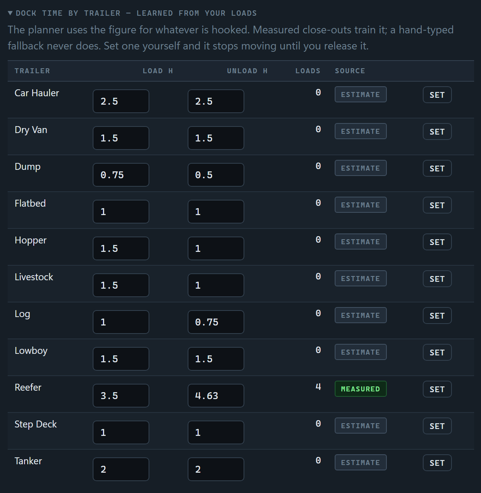
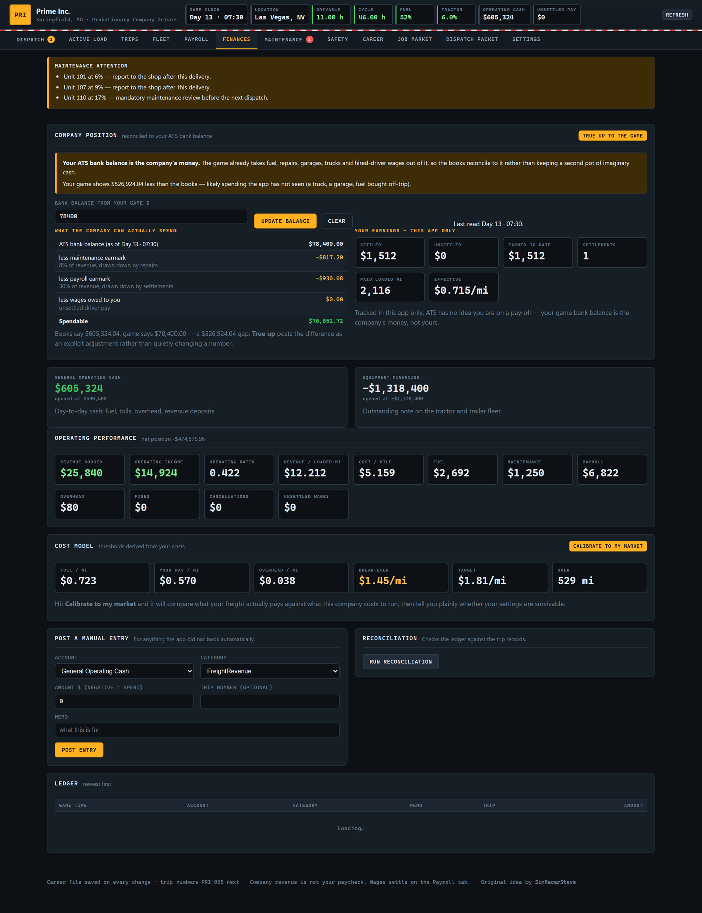
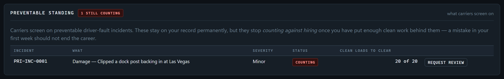
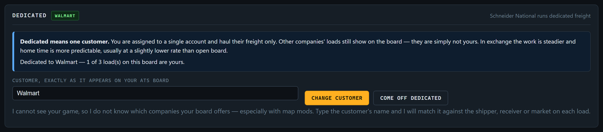
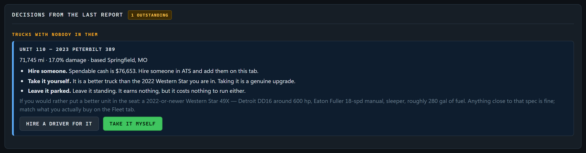

A dispatch office for American Truck Simulator.
You drive. The company decides, audits and pays.
What it is A carrier that runs you as a company driver
Runs on Windows · one portable .exe · no install
Needs Nothing. No internet, no account, no runtime
Your game ATS, any DLC, mods welcome
This manual Covers v0.31 alpha · the build is shown in the app header
Alpha
This is v0.31 alpha and is not ready for release.
It is being play-tested. Expect rough edges, expect things to change, and expect the occasional
bug. Keep backups of your career file — Settings → Data will take one for you.
Please report anything that looks wrong.
Original idea by SimRacerSteve on Discord.
The company-driver roleplay this app automates is his — the hours-of-service
discipline, the dispatcher who owns their own bad calls, and the rule that company freight revenue
is never the driver's paycheck.
Contents
Getting going
1What this app is, and the rules it holds itself to3
2Running it, and where your career file lives4
3Getting hired — the application and the carrier market5
4Your first day: what to buy and set up6
The daily loop
5The loop, end to end7
6Reporting from the game8
After a delivery you usually just confirm9
7Hours of service — the four clocks10
Reporting and reading your clocks11
Reading your clocks off a screenshot12
Recap is worked out, not taken on trust13
Day numbers, and the day they were off by one14
Recap, and why it beats a 34 more often than you think15
When there is no window left to work with16
The drive clock that is really the break clock17
8The board: the dock first, then the city18
Stage two: the city board19
9How a load is judged20
Break-even, and why it is not a fixed number21
Appointments, and the receiver who takes you early22
A slot has to fit your clock too23
When the answer is "go to sleep"24
10Running the load: the trip log and fuel stops25
Reporting after you load, and getting stuck at a dock26
11Closing out, and never typing a number twice27
Clocks at delivery, and the carry-forward28
How detention is worked out29
The dock teaches the planner30
A stamp typed wrong, and how to take it back31
Taking the next load off the receiver's own board32
Why a pre-loaded pickup is not a live load33
12The audit, and whose fault it was34
What else the audit tells you35
The company
13Home time36
Choosing and changing your arrangement37
Re-rigged at home, and waiting on a trailer38
Waiting on a trailer somebody else has39
Drop and hook40
If your companies are renamed41
Asked for, and therefore yours42
Three loads at one dock is not the town43
What to do when you get in44
14Growing the network — why cities must be discovered45
An older career with a phantom fleet46
15Garages, equipment and the trade cycle47
The domicile swap48
16Money — one bank account, two sets of obligations49
The ledger and the cost model50
Reporting the balance51
17Payroll — payday is Friday52
The pay stub53
18Maintenance and work orders54
When the truck is the problem55
Written off — and why the line moves56
Totalling a tractor, and what happens next57
19Safety: incidents, discipline, and being forgiven58
One late load is a bad day59
Reviews carry on after probation60
Being let go, and the one way back61
A mistake should not end the career62
20Career, promotion and changing carriers63
Skills, and who will hire you on them64
What you want to be running65
What a carrier pays, and how far it takes you66
Dedicated freight67
Changing employer: squaring it with the game68
21Hired drivers and the fleet report69
What the report decides70
The trade cycle71
Two odometers, and which one is real72
Trailers, and keeping hold of good drivers73
Which trailers go, and what replaces them74
Filling the review in75
When a truck reaches the end76
Probation, and asking operations for things77
Your licence, and asking to be re-rigged78
Asking for a better unit79
When a seat comes free80
Squaring the books, and the truck at the end of it81
The 34-hour restart, and the miles between loads82
Restarts, continued — and the miles between loads83
The two empty legs, and the readings that pay them84
When operations parks you and your clocks are fine85
Reference
22Settings, backups and updating the app86
23If something looks wrong87
24Credits88
Every screen here is a real capture from a running career: R. Calloway,
a probationary reefer driver at Prime Inc., thirteen days in with four loads behind him,
three hired drivers under him and home time coming due. The numbers are his, not mock-ups.
TruckSim Dispatcher — User Manual2
Section 1
What this app is, and the rules it holds itself to
American Truck Simulator gives you a truck and a job board. This gives you an
employer — one with standards, a safety department, a maintenance schedule and an accountant.
You are a company driver. The app is operations: it takes your position and your hours, looks at
the freight you can see in game, and tells you which load you are running and why. Then it audits
the trip, decides whose fault any failure was, updates your safety record and pays you.
Nothing is automatic. The app cannot see your game, so you report what it shows and the app does
the arithmetic, the record-keeping and the judgement. Everything it knows, you told it.
The rules it will not break
These come from the roleplay this app was built to automate, and they are enforced in code rather
than left to good intentions.
Feasibility is confirmed before you hook, never after
Every load is simulated against your hours before it is offered. The app will not accept a load
and then discover it does not fit — that is the single most common way a dispatch roleplay falls
apart, and it is designed out.
No load is planned to consume every remaining minute
A safety buffer is required between projected arrival and the deadline, plus a parking allowance
at the end of a shift. Two hours by default, and you can raise it.
Your HOS display is authoritative
The app never invents clock values. It projects forward from what you report, and it keeps the
break clock and available drive time strictly separate — they are different numbers and confusing
them is how drivers run illegal.
A bad dispatch decision is the company's fault, not yours
If a load was booked with too little slack and it runs late, the audit records it as
dispatcher fault. It does not touch your safety record and it cannot trigger discipline.
The company owns freight it should never have accepted.
Company revenue is not your paycheck
Freight revenue belongs to the company. Your wages are a separate, per-mile calculation that
settles on the Payroll tab. The two never mix.
It will not invent numbers to make the books balance
No revenue from imaginary drivers, no damage on equipment your game has never heard of, and if
the accounts drift the app asks you to reconcile rather than quietly writing a new balance.
1 · What this app is3
Section 2
Running it, and where your career file lives
Double-click TruckSimDispatcher.exe. A console window opens and your browser opens
with it. Leave the console open while you play; Ctrl+C shuts it down.
It is a web app that only ever listens on 127.0.0.1 — your own machine. Nothing is
served to the network and nothing leaves the computer.
Situation
What happens
SmartScreen warns you
The exe is unsigned. More info → Run anyway.
Policy blocks the exe
Some managed machines refuse unsigned executables. You can run it from source instead — see Section 23.
You want a specific port
--port 5199
You do not want a browser opened
--no-browser
Your career file
The app creates a data folder beside the exe holding career.json plus
rotating backups. Copy that folder to another machine and the career goes with it — that is the
whole portability story.
If the folder beside the exe is not writable — dropped into Program Files, a read-only share — it
falls back to %LOCALAPPDATA%\TruckSimDispatcher\data. The console prints which file it
opened every time it starts, so you are never guessing.
Every save is safe
Writes are atomic: the app writes a temp file and swaps it in, so a crash mid-save cannot leave
you with half a career. A timestamped backup is rotated before each write, and up to forty are
kept. If the file is ever unreadable it is quarantined rather than discarded.
Your API key is in that file
If you set an API key so the app can read your screenshots, it is stored in
career.json in plain text. Do not post the file publicly or commit it to a repository.
Updating without losing anything
Replace the exe in the folder you are already using and leave data alone. Newer builds
migrate older career files forward as they load — migrations only ever add what is missing, and they
never rewrite history. Section 23 covers what to do if you move the exe somewhere new.
2 · Running it4
Section 3
Getting hired — the application and the carrier market
First run puts an application in front of you. It is not a formality: what you put on it decides
which carriers will take you, what you get paid, how long your probation runs, which truck you are
handed and how often you go home.
Field
What it changes
Experience (years)
Under 1 year is a greenhorn: lower starting rate, longer probation, hazmat restricted. Five years or more shortens probation and starts you above the floor. It also carries for the whole career — years accrue from days served, so what you declare here is a real head start.
Preferred division
Which carriers are a fit, and which freight scores higher on the board.
Endorsements
Hazmat opens placarded freight most drivers cannot touch, and some carriers require it. There is no tanker or doubles endorsement — see section 22.
Transmission
You get a unit with the gearbox you asked for.
Freight you will not haul
Respected. The app will not force it on you.
How often you want to be home
A real commitment the dispatcher routes for. See Section 13.
Home time is the one to think about
Weekly means shorter regional runs and smaller cheques. Six weeks means the most miles and the
most money. The dispatcher will steer freight to get you back on the schedule you picked, so
picking "home every week" and then wanting long hauls will fight itself.
Choosing an employer
Submit the application and you get a market of carriers — real US fleets, with their actual
headquarters and the freight they genuinely run. Schneider out of Green Bay, Prime out of
Springfield, Melton out of Tulsa, Groendyke out of Enid, and a dozen more.
Each shows its pay, equipment and home-time ratings, the divisions it runs, its yards, and the bar
it holds applicants to. You apply to the one you want.
They can say no
A specialised carrier will not hire a greenhorn, and a carrier having a bad quarter may not be
hiring at all — business conditions shift and are visible on the card. Rejection is not the end of
it: build experience with a general carrier and apply again. The app credits your declared
experience plus everything you have done since, so the gap closes as you work.
Pay and standards shown for these carriers are roleplay values chosen to make the progression
interesting. They are not real employment terms and should not be read as such.
3 · Getting hired5
Section 4
Your first day: what to buy and set up
The moment you are hired the app gives you a numbered setup checklist. It exists because the app
cannot buy anything in your game — you have to make the game match the company.
You start with one small garage and one truck. That is what a fresh ATS profile can afford,
and it is deliberate.
It is a starting point, not a ceiling
If you have seeded cash with a save editor, buy the large garage instead, set the yard to Large
on the Terminals tab, and use Fleet → Stock a yard to put a five-truck fleet in it in one
step. Yard tier sets capacity exactly as the ATS garage upgrades do: Small 1, Medium 3, Large 5.
The checklist, in order
Buy a garage in your home city. Small is enough to start. This is the yard dispatch plans
your first load out of, and it is where home time happens.
Buy the tractor the company assigned you, then edit the unit on the Fleet tab so its make,
model and gearbox match what you actually bought.
Buy a trailer in your division and do the same.
Tick "this unit exists in my ATS garage" on both. That flag is what makes the app track
damage and odometer against them. Untick it and they are company backdrop the app will never
invent condition for.
Report your status on the Dispatch tab: game day and time, where you are, fuel, damage,
odometer and your in-game bank balance.
Report your HOS clocks exactly as your display shows them.
Money, and the honest version of it
A save editor can seed cash if you want to start bigger. Money lives in
Documents\American Truck Simulator\profiles\<profile>\save\<slot>\game.sii,
which is encrypted — SII_Decrypt opens it and TS SE Tool is a purpose-built editor. Mods can also
unlock all dealerships and recruiting agencies, which ATS otherwise hides until you drive past them.
Back up your profile folder before running any editor
Editors can corrupt a save, TS SE Tool is explicitly alpha software, and SCS cannot support a
modified save because they cannot tell what was changed.
And note the trap in Section 14: editing cities to be visible does not make them
discovered. They appear on the map and never generate a single job.
4 · Your first day6
Section 5
The loop, end to end
Every load follows the same nine steps. Two tabs do almost all of it: Dispatch to get a
load, Active Load to run and close it.
The dashed blue return is the part worth noticing. Closing a load already
tells the company where you are and what condition the truck is in, so the next dispatch inherits
all of it. You confirm it with one button instead of typing six fields again.
The tabs
Dispatch — report status and clocks, enter the board, get a load. Home time and newly
discovered cities show here too.
Active Load — the load in flight: trip log, fuel stops, close-out and the audit.
Trips — every trip on file. Click a row for the full record.
Fleet — tractors and trailers by garage. Add units, stock a yard, mark what your game
actually owns.
Terminals — your yards, their tier and services. Open new ones, request a transfer.
Finances — ledger, cash position, break-even cost model and calibration.
Payroll — settlements: what you are owed and what has been paid.
Maintenance — thresholds, work orders, PM schedule.
Safety — incidents, fault attribution and the discipline ladder.
Career — rank, probation, pay, home-time arrangement, employment history.
Packet — the whole career as text, to paste into a chat. Section 22.
Settings — HOS rules, economics, mods, backups, data.
5 · The loop7
Section 6
Reporting from the game
Operations plans off these numbers, so they have to be current. Read them off ATS and type what
it says.
Dispatch → Report from the game. Every field here is something only you can see.
Field
Where to read it
In-game day & time
Your ATS clock. See the note below on day numbers.
Duty status
What you are actually doing: off duty, sleeper, on duty, driving.
City / state / where exactly
Where the truck is standing. "Where exactly" matters — reporting Terminal at your home yard is what logs home time as taken.
Fuel %
The gauge. Used for range planning and fuel-stop counts.
ATS odometer
The truck's odometer, for mileage auditing against dispatched miles.
ATS bank balance
Your in-game money. This is the company's cash — see Section 16.
Tractor / trailer damage %
From the truck browser. Only tracked for equipment you flagged as being in your garage.
The clock is day numbers, not dates
ATS has no calendar you can reconcile against — there is no year or month in the game, only
elapsed days and a time of day. So everything reads Day 12 · 14:30. You enter a day
number and a time, and every deadline, rest and projection is computed from that.
6 · Reporting from the game8
Section 6, continued
After a delivery you usually just confirm
Closing a load already reported all of this, so the panel comes back pre-filled with a green
banner naming the trip it came from, and a Confirm — nothing changed button.
The same panel after a close-out. Press confirm and move on; edit only what moved.
Confirming re-posts what is on screen and clears the banner. If you drove somewhere, sat a rest or
bought fuel between closing out and picking up the next load, change those fields first — the button
is a shortcut, not a substitute for reporting something that genuinely changed.
Reporting in at the yard is special
Set Where exactly to Terminal while you are in your home city and the app records
your home time as taken and resets the clock. Anywhere else — a truck stop across town, a rest area
on the edge of the city — does not count. See Section 13.
6 · Reporting from the game9
Section 7
Hours of service — the four clocks
This is the heart of the app. Four clocks run at once and the smallest one binds. The app
simulates them forward across a whole trip, inserting breaks, rests and restarts where the rules
demand them, and reports what the load will actually cost you in hours.
An overnight rest does not restore your 70
This catches people constantly. Sleeping ten hours gives you a fresh 11 and 14 — it does not
touch the cycle. Run out of cycle hours and only a 34-hour restart fixes it, which is why the app
starts watching for restart-friendly destinations once you drop below 18 hours.
7 · Hours of service10
Section 7, continued
Reporting and reading your clocks
Type the four clocks exactly as your HOS display shows them, in hours and minutes —
8:45, not 8.75. A decimal still works and comes back as h:mm. If you
run an HOS mod its values win — the app projects from your reading, never its own.
Underneath, the app shows what those numbers mean right now: the binding clock, how far you can
actually get today at your effective speed, and the next thing the rules will force you to do.
Optional 30-minute break
ATS runs on compressed time, which makes a short mandatory break awkward to sit. Turn it off in
Settings → HOS and the planner stops inserting breaks and stops tracking the break clock
entirely — the field disappears and your 14-hour window becomes the binding stop.
Recap
If your display projects hours returning to the cycle, enter them as
8:00 in 1, 10:30 in 2. Decimals work too. Recap is worth understanding — see the next page.
What the app does with them
When it evaluates a load it walks the whole trip forward minute by minute: pre-trip, deadhead,
loading, driving legs, fuel stops, required breaks, required rests, unloading. It stops when a clock
runs out, applies the correct reset, and continues. What comes back is a projected arrival time and
the slack against the appointment.
Setting
Default
What it does
Safety buffer
2:00
Minimum slack between projected arrival and the deadline. Below this a load is Tight.
Parking buffer
0:45
Time reserved at the end of a shift to find legal parking.
Speed factor
0.86
Fraction of governed speed actually averaged, allowing for traffic, ramps and terrain.
Pre / post trip
0:15
On-duty time that eats the 14-hour window without moving the truck.
Fuel stop
0:21
Time per fuel stop, and how many are needed comes from your range.
All of them are editable in Settings. If your plans consistently drift by more than three hours the
audit will tell you to adjust the speed factor.
7 · Hours of service11
Section 7, continued
Reading your clocks off a screenshot
If you run GDC Companion alongside the game, you can paste its recap page in
once a day and have the clocks and the whole recap projection filled in for you.
Jobs at this location only appears at a shipper or a receiver. There is nothing on
offer at a truck stop, a rest area or your own yard — only in the city around them — so
the city board is the only option there, and the app stops offering a list that does not exist. Move
the truck somewhere freight is not offered and the stage resets itself.
Paste it the same way you paste a job board — Ctrl+V on the Dispatch tab — then
press Enter my clocks from this rather than the freight button. The four clocks and the whole
recap projection go straight in. There is nothing to type and nothing further to press. It needs an
API key (Section 22); without one, type the clocks in as usual and nothing is lost.
It must be GDC Companion's recap page
That is the screen the reader is built around: the four remaining clocks, the rolling eight-day
totals, and the projected recap returns. A screenshot of the game's own HOS display, or of some
other tracker, will come back mostly empty rather than half-guessed — and it will tell you
what it was actually looking at.
Why this is worth doing rather than typing
The trap
What the reader does about it
Used versus remaining
The recap page shows both, and the used figures are the big bold ones — "Cycle
Used 34:42" sits right next to "left 35:18". The app wants what is left. The reader is told
to take the remaining row and to say which panel it read, so you can check it.
Day arithmetic
Recap returns are listed against absolute days — Day 17, Day 18. The app wants "in 4
days". It reads today's day off the same screen and does the subtraction itself, five rows
at a time, which is five chances for you to slip a day by hand.
A projection that is short
It works recap out from the rolling on-duty totals rather than believing the projection
table, then checks one against the other and against your cycle. See overleaf.
Drive-left looking wrong
Drive left is often smaller than the drive limit minus drive used, because the 14-hour shift
is the binding clock. That is correct. It is copied as shown and not "fixed".
It saves, and there is an undo
You get a receipt rather than a form: what went in, which panel each clock was read off, and one
Undo button. Deciding which of two panels a number came from is the mistake this screen
invites, so the app makes that call and shows its working.
It will not guess a calendar
The offsets are worked out inside the screenshot's own numbering — boundary day minus the day
that screen calls today. It never assumes GDC Companion and this app agree about what day your
career is on, because they count from different starting points. If the day header is cropped out
of your capture, the rows are shown to you verbatim and left for you to enter, rather than being
pinned to the wrong midnights.
7 · Hours of service12
Section 7, continued
Recap is worked out, not taken on trust
Recap is mechanical. The hours you worked on a day drop out of the rolling window when
that day does — eight days later. Given the day-by-day on-duty totals, every boundary and every
batch follows without anyone's projection.
So that is what the app does with your screenshot. It reads the rolling on-duty totals table,
adds the window length to each day, and works out what comes back when. Your tracker's own projection
table is read too, but only to compare against — where the two differ, the day rows win, because
those are the ones the app can show its working from.
Day worked
On duty
Comes back
Day 13 (today)
02:30
midnight ending Day 21 — in 8 days
Day 12
06:41
Day 20 — in 7 days
Day 11
09:54
Day 19 — in 6 days
Day 10
05:34
Day 18 — in 5 days
Day 9
00:25
Day 17 — in 4 days
And it checks the sums against your cycle
Cycle used is the limit minus what is left, and it ought to equal the day rows added up. When it
does not, hours are being charged against you that no day accounts for — so they have no
boundary to come back at, and the projection is short by exactly that much.
That is not a hypothetical. A real capture showed 35:18 left against a 70,
so 34:42 used — but the day rows only added up to 25:04. The missing 9:38 had been
worked on days the tracker had no status for, so they appeared in the cycle and in no row. The
projection stopped at 60:22 instead of returning the full 70.
This is the difference between two opposite decisions. On that projection
alone the nearest recap is twenty-five minutes four days out, and dispatch says take the
thirty-four. With 9:38 actually coming back sooner, waiting is the cheaper play. So the app says so
rather than quietly planning on the short figure.
What you will see
Where the recap came from — "worked out here from the 8 day rows", or "the tracker's
own projection table" when the rolling totals were not legible.
Any disagreement, in plain terms: a boundary the day rows expect and the projection does
not, a batch of different size, or a projection row with no day behind it.
Unaccounted hours, when the cycle and the rows do not reconcile, with a warning not to
trust a "take the 34" call made on those numbers.
The window length is your rule set
Eight days because that is the default 70-in-8. Change the cycle to a seven-day window in Settings
and the arithmetic follows it — the eight is never hard-coded, here or anywhere else.
7 · Hours of service13
Section 7, continued
Day numbers, and the day they were off by one
The app counts days the way the game does. It did not always, and if you have a career
from an earlier build the numbers on it have moved.
Every time in the app is stored as a moment, and the day number is worked out from it. That
arithmetic used to add one — so the day the game called 14 was shown as 15, and
every date you read was a day ahead of the one in front of you. The load due "Day 15" was due the day
the game called 14, which is exactly the sort of thing you find out by being late.
Before
Now
The game says
Day 14, a Monday
Day 14, a Monday
The app said
Day 15, a Monday
Day 14, a Monday
First day of a career
Day 1
Day 0
Paydays
5, 12, 19, 26
4, 11, 18, 25
Nothing about your career actually moved
This is a relabelling, not a rewrite. Because times are stored as moments and day numbers are
derived, every trip, delivery window, home time, settlement and log entry renumbered itself the
moment the arithmetic changed — and every duration between two of them is untouched,
because the gap between two moments does not care what the days are called.
Payday needed one extra piece of care. Payday is Friday, and Friday is
worked out from the day number — so the weekday anchor moved down with the numbering.
Had it not, every payday would have slid onto a Saturday. Your paydays fall on the same actual days
they always did; they are simply now called 4, 11 and 18.
What this means for a career already running
The load you are on renumbers with everything else. Its due date now reads the same day
the game does, and the hours remaining on it never changed.
Home time is measured between moments, so your cadence and how much you are owed are
exactly as they were.
The fleet review is counted from the end of the last one you filed. A review you have
already done stays done, and the next falls fifteen days after it — the same actual day, one
number lower.
Payroll keeps its history. The one day number a career file stores is the day you were
last paid, and it comes down by one with everything else so no payday is repeated or skipped.
It happens once, quietly
Career files carry the shape they were written in. An older one is brought forward the first time
it loads and then left alone — running it twice would take another day off and put you a day
behind instead of a day ahead. A career started on this build is already correct and is never
touched.
7 · Hours of service14
Section 7, continued
Recap, and why it beats a 34 more often than you think
Recap is the most misunderstood part of hours of service, and getting it wrong is the
most expensive mistake in the book — drivers sit thirty-four hour restarts they did not need.
The cycle is a window, not a tank
Your 70 hours is a rolling 8-day window. It does not empty and get refilled. Every midnight,
the hours you worked 8 days ago drop out of the window and come back to you. That is recap. Nobody
has to earn it — it happens because time passed.
So there are two ways to get cycle hours back, and they are nothing alike:
What you get back
What it costs
Recap
Only the hours you worked 8 days ago
Waiting until midnight
34-hour restart
The full 70, all at once
34 hours parked
If you worked a light day 8 days ago, recap gives you almost nothing and the restart is right. If
you worked eleven hours that day, waiting until midnight beats sitting a 34 — often by a day
and a half. Choosing wrong in either direction costs money, so dispatch makes the call.
Dispatch weighs it for you and shows the arithmetic
When the cycle is what is stopping you, you get one of two answers with the numbers attached:
“Do not take the 34. You get 9:30 back at Day 2 · 00:00.
That is 4:00 from now, and it puts your cycle at 11:30. Park, take your 10, and roll after
midnight. Sitting the restart instead would cost you 30:00 more for hours you do not need yet.”
“Recap will not cover this — take the 34. You get 2:00 back
at Day 2 · 00:00, which puts the cycle at 3:00. This work needs 9:00, so you would still be
6:00 short.”
Telling the app about it
Read the projection off your HOS display and type it in Hours coming back (recap) as
8:00 in 1 — eight hours returning one day from now. Several batches are fine:
8:00 in 1, 10:30 in 2. The panel next to it explains all of this in place, so you do
not have to remember which page it was on.
Report nothing and the app does not guess. It cannot see your game, so it will advise a restart and
tell you what recap is, rather than inventing a schedule. The planner also uses recap inside the
trip simulation: a load that needs a rest crossing midnight gets those hours back mid-trip, which
sometimes makes a load runnable that otherwise would not be.
A restart wipes the window clean
This is the part that catches people. Taking the 34 resets the whole 8-day window, so any recap
you were owed goes with it. You get the 70 — not the 70 plus your recap. If recap would have
been enough, the restart threw hours away.
7 · Hours of service15
Section 7, continued
When there is no window left to work with
Every load starts with dock work, and dock work cannot be split. If your window will
not cover it, dispatch says so before you go anywhere near a job list.
A load is not divisible by a rest
Loading takes what it takes — a live flatbed is a couple of hours, a van hook is minutes. You
either have the window to do the whole job or you rest before you start it. Nobody loads for forty
minutes, sleeps on the customer's property, and finishes in the morning; no receiver would allow it,
and the app used to plan exactly that and call it legal.
So the board is not offered at all
If the window will not cover dock work, nothing on any board is runnable. Typing in two pages of
freight so it can all be rejected wastes your evening — and if you paste screenshots, an API
call per board that was never going to produce a load. Dispatch stops instead:
"You have 0:46 of your 14-hour window left. Loading flatbed freight takes
about 2:00 and you still have to get off their property afterwards, so there is nothing on any board
you could legally start. Do not bother pulling the job list — find a truck stop, take your 10,
and report in tomorrow with a fresh clock. I will have freight for you then."
The job-entry form and the screenshot box are both hidden while that stands.
That is the point of it.
Where there IS enough window, but not enough to spare
Then the load is offered and the rest is planned before the dock work rather than through
the middle of it. Where the customer will not have a truck sit overnight, that means the run to a
truck stop and back, and the plan shows both legs and costs them.
What you have
What happens
Under the parking buffer
You are out of hours. Take the 10 where you are — and be told plainly that it does not
touch the cycle.
Enough to move, not to load
No board. Go to a truck stop, take the 10, come back in the morning.
Enough to load, not to finish
The load is offered with the rest planned in, before the dock work, and the hop out and back
if the customer will not have you.
Plenty
Straight through. Nothing invented.
Dock times are per trailer, and they are learned
A flatbed starts at two hours because the cargo goes on and gets secured; a dry van at an hour and
a half; a reefer at three. Those are starting estimates and they move toward whatever your loads
actually take. The estimate matters here more than it used to — too low and it would wave
through exactly the load this rule exists to stop.
7 · Hours of service16
Section 7, continued
The drive clock that is really the break clock
Most HOS mods cap the drive figure on their display at whatever will stop you next.
Before your first break of the day that is the break threshold, not the drive limit — so a fresh
clock reads eight hours when there are eleven in it.
What you are looking at
Start a shift with a full clock and your display shows something like this:
D 8:00 S 14:00 B 8:00 C 70:00
There are eleven hours of legal driving in that shift. The display says eight because eight is
when the thirty-minute break falls due, and the mod is telling you when you will next have to stop
rather than how much driving you have. Copy that across into Drive left — which is exactly
the sensible thing to do — and you have just told dispatch you have three hours less than you do.
Why it never showed up as a problem
The four clocks here are independent counters. Enter 8:00 and the planner drives eight hours, finds
the drive clock empty and parks you — and every load it judged against that shift was judged on
a window three hours too short. Runs you could easily have made come back refused, and the reason
given is about hours, because as far as the app knows the hours are what you said they were.
Silent, repeating every shift, and it reads like the planner being cautious
rather than the number being wrong.
So it asks
When Drive left and the break clock come in on the same figure, that is the fingerprint,
and you are asked which it is the moment you enter it — from the Dispatch tab, from a recap
screenshot, or from the clocks you read at the dock. Nothing is corrected behind you: the app does not
guess at numbers you reported, and quietly rewriting a clock would be worse than accepting a bad one.
"Drive left and the break clock are both 8:00. If that is straight off your display, your mod is
capping the drive figure at the break. Which is it?"
Your answer
What happens
It is capped
The drive clock is set to the real figure — the drive limit, less the driving allowed
before a break, plus what is on the break clock. On a fresh clock that is 11 − 8 + 8 = 11:00;
four hours in it is 11 − 8 + 4 = 7:00.
No, that is my drive clock
Left exactly as you typed it.
Both clocks landing together is sometimes real
Take your break three hours into the shift and your break clock goes back to 8:00 while your drive
clock is also on 8:00. That reading is perfectly genuine, which is why you are asked every time
rather than corrected once and assumed forever — even after you have told the app your display
caps.
After your first break the displayed figure is already right, because the
drive clock is the binding one from then on. If your mod shows the true limit before the break too,
tick My display never caps the drive figure when the question comes up and it stops —
switch it back on under Settings → HOS rule set.
7 · Hours of service17
Section 8
The board: the dock first, then the city
The app cannot see your game, so you tell it what freight is on offer. It asks in the order you
actually meet it — what is going out from where you are parked, and only then the whole city.
Stage one: jobs at this location
In ATS this is find other load from this location — the handful going out from the dock
you just came off. Origin is filled in for you and there is no deadhead field, because there is
no deadhead. Usually three or four rows.
The four that matter
Destination, loaded miles, job revenue and hours to deliver. Without all four a load cannot be
evaluated, and the app refuses to stage it rather than score it as free freight.
Everything else is optional
Weight, shipper, receiver, extra stops and the flags all refine the decision, but a load with
just the four essentials is perfectly usable. On a dedicated account (Section 20) the shipper
stops being optional — it is how the app knows whose freight it is.
Rejecting the dock is not rejecting the city
If nothing at the location is worth running, dispatch says so in those terms —
"Nothing worth running out of Las Vegas, NV at this dock" — and asks for the wider board.
It will not start talking about repositioning or running empty until the city itself has been
looked at, because there is usually far more in a city than at one dock.
Pasting screenshots instead
If you have set an API key (Section 22), you can paste screenshots of the job board straight in and
the app reads the rows out of them. ATS only shows about ten jobs at a time, so paste as many as you
need — they are read in small batches behind the scenes and merged, and a job that appears on two
screenshots is only added once.
It always asks before committing
Extracted rows are shown in an editable table for you to confirm, and anything missing a
destination, miles, revenue or a delivery window is refused rather than staged with a silent zero.
A misread payout would corrupt every rate and feasibility decision downstream, so the confirmation
step is not optional.
8 · The board18
Section 8, continued
Stage two: the city board
Only when the dock has nothing. This is the full freight board for the city, including jobs you
would deadhead to — so the deadhead field comes back and the origin is yours to set.
City mode. Origin and deadhead are editable because a city job may start anywhere in
town.
You can switch between the two at any time with the buttons at the top of the panel, and the app
resets to jobs at this location after every delivery — a new dock is a new starting point.
A mixed board counts as a city board
Put one city job on the board and dispatch treats the whole thing as the wider board, because it
no longer makes sense to say "there might be more in town". That only matters for the wording of
a rejection; the scoring is identical either way.
Flags worth setting
Urgent — noted as a con. No room for error on the clock.
Fragile — warns that damage will show on your record.
Hazmat — a hard gate. Refused outright without the class on your file.
The trailer is not a gate. ATS filters the freight board by whatever is already behind
your truck, so any job you can see is one your trailer pulls — the game checked before it
drew the list. If the trailer type you typed does not match what is hooked the app says so and
takes the load anyway. Fertilizer rides a flatbed, a dry van or a reefer, and no table the app
could keep would get every cargo right; the game already has one that does.
Oversize — a hard gate while you are restricted. Probationary drivers cannot run it until
Safety signs off.
Needs tarp — adds tarp pay to your settlement.
8 · The board19
Section 9
How a load is judged
Press Evaluate the board and operations picks one load, or rejects the lot. Either way it
shows its working.
The chosen load. Note the first reason: this driver's home time is due, and that
outranked a load paying more per mile in the other direction.
Hard gates come first
Before anything is scored, a load can be refused outright: missing endorsement, a restriction on
your file, freight you will not haul, a trailer you cannot pull, or an infeasible plan. A trailer
mismatch is the exception — it produces a swap plan rather than killing the load.
Then it is scored
Factor
What it rewards
All-in revenue/mile
Revenue over total miles including deadhead, against your computed break-even and target.
Total revenue
A big load is worth something even at a modest rate.
Deadhead penalty
Empty miles are pure cost. Over 25% of loaded miles is a hard warning.
Positioning
Where it leaves you. Tier 1 reloads easily; tier 3 means deadhead or a cheap escape.
Reset positioning
Below 18 cycle hours, ending somewhere you can sit a 34 starts to dominate.
HOS slack
Comfortable beats tight, every time.
Home time
Silent until close. Then it climbs, and once overdue it nearly doubles.
Division / length fit
Freight and run lengths you said you wanted.
Open Scoring detail on any load and every term is itemised with its contribution, so a
decision you disagree with can always be traced to a number. And you can request an alternate with a
reason — dispatch decides, but it will answer. Off probation you get more latitude.
9 · How a load is judged20
Section 9, continued
Break-even, and why it is not a fixed number
Most dispatch tools use real-world rate benchmarks — $2.10 a mile and so on. Those are useless
here. ATS runs a scaled map, and economy mods rewrite payouts wholesale, so a fixed benchmark either
rejects every load or accepts every load depending on your install.
Instead the app computes what a mile actually costs you:
Because the floor is derived from your own fuel price, your own pay rate and
your own overhead, it stays honest across any economy mod, any fuel price and any pay scale.
Three things that buy a load past the floor
Below-break-even freight is refused, unless it buys something the rate does not measure. There are
exactly three of those, and each one is said out loud on the load rather than being a silent
exception:
It gets you out of a dead market. Cheap, but the alternative is sitting in a town with no
freight coming out of it.
It gets you home when home time is already overdue. Not merely due — overdue
— and it has to actually finish inside the home radius, not just point that way. At that
point the alternative on offer is running you in empty over the same miles for nothing,
so anything on the trailer beats it.
It parks the truck where the cycle can restart. Cheap, but you were stopping anyway.
The rate is still listed against the load either way. Nothing is hidden
— you are told it loses money and told what it buys.
If everything is being rejected, check overhead first
Go to Finances → Cost model → Calibrate to my market. It samples your board and history and
tells you whether your cost assumptions are Healthy, Marginal or Unsustainable, with ranked
recommendations.
On a scaled map the usual culprit is overhead per load. A realistic real-world figure spread over
a 300-mile in-game haul swamps the genuine per-mile costs, which is why the default is a modest
$20 rather than the $85 a real carrier would book.
9 · How a load is judged21
Section 9, continued
Appointments, and the receiver who takes you early
ATS shows a delivery window as a range. A dock does not work that way — it books
you a slot inside it, and that slot is what the plan aims for.
Your slot, not the moment the doors unlock
Where the window gives a range, the app books an appointment a couple of hours into it — on
the half hour, never more than four hours past the opening, and clear of the close so the unloading
still fits. Dispatch tells you the time when the load is authorised, and the Active tab keeps it in
front of you.
And never earlier than the plan can arrive. If the run has you resting overnight at the
shipper and rolling in at 06:30, the slot is 06:30 — a dock does not book you in before you can
physically be there, and neither will the app. Where even that is past the deadline, no slot is quoted
at all and the window closing governs on its own.
Turning up before your slot is sitting on their gate, not slack. Aim for the slot.
Grace, then it counts
Missing the appointment is not instantly a service failure. You get two hours past it, and
inside that the close-out says so and the load still counts on time — traffic happens and a
receiver with the doors open is not writing you up over ninety minutes.
Past the grace it counts against you even though the window is still
open, because the dock was expecting you and you were not there. The window closing is still a
hard deadline on top of that. Both are editable in Settings.
It can only ever count against you for a slot the plan actually reached. If
dispatch's own projected arrival was later than the appointment, the appointment was never yours to
make and it is not held against you.
Measured from when you arrive, not when you leave. Dock time is the
receiver's, so a two-hour unload is never two hours of lateness. Log Begin unload when you
back in and the close-out takes its delivery time from that.
Sometimes they will just take it
About one load in eight, the receiver is having a quiet week and will take the freight whenever it
turns up, appointment or not. You are told at dispatch, not on the gate — which is the
whole point, because hours you know about in advance are hours you can plan a reload around:
"Aurora, CO is quiet this week — they will take it whenever you get
there, appointment or not. Do not sit on their gate waiting for a slot; that is about 7:52 you do not
have to spend, so a reload is worth looking at."
The board card says it too, as a pro, before you commit to the load. There is no slot to keep and no
wait planned into the run.
It does not flatter your numbers
An early take is the receiver's doing, not a schedule beaten, so it counts as on time and
nothing more — there is no special "early" grade inflating your record. The close-out
notes what it saved and credits them, so when you read the file back later the early time is not
mistaken for your driving.
It does not move the deadline either. The window still closes when it
closes.
9 · How a load is judged22
Section 9, continued
A slot has to fit your clock too
A time inside the delivery window is not automatically a time you can work. The
fourteen-hour clock decides that, and it does not stop for waiting.
Everything before the dock comes out of the same window
The 14 runs continuously from the moment you go on duty. Loading, the drive, and sitting at the gate
waiting for your slot all come out of it — and so does the unloading at the end. An eight in the
evening appointment on an eight in the morning start leaves two hours of the fourteen by the time the
doors open. That is not enough to unload and find parking, so the day is gone and the load is still
on the trailer.
So the slot is booked around it
The appointment is placed to leave room for the dock work and for getting parked afterwards. Where
the window offers an earlier time that fits the hours in hand, that is the one you get —
earlier is always safe, later is what takes your day.
And where nothing in the window fits
Then dispatch says so when the load is authorised, rather than letting you find out on their gate:
"That slot is past what is left of your fourteen once the dock work is
counted, so plan on a rest before they take it — do not burn the day waiting at the gate."
After a ten-hour rest the fourteen is fresh, so a late slot is perfectly workable — you just
need to know that is the shape of the day before you set off. What the app will not do is book a slot
that needs neither: no rest planned, and not enough hours to work it.
Loads already out get re-booked
Appointments booked before this rule existed are moved to something workable when the career loads,
including loads already accepted or rolling. The log says which, and the Active tab carries the new
time.
9 · How a load is judged23
Section 9, continued
When the answer is "go to sleep"
Sometimes every load on the board fails, and the freight is not the problem — you are simply out
of hours. Rejecting the board and suggesting you reposition would be worse than useless advice for
a driver who cannot legally drive, so the app recognises this case and answers it properly.
The two resets are not interchangeable
A 10-hour reset restores drive and shift. It does not touch the 70-hour cycle — only the
34-hour restart does that. Confusing the two is exactly the mistake this app exists to prevent,
so the wording names which one you need and what it will and will not give back.
Where a nearby city can hold a restart — real parking, fuel and services — the app names it, so
the instruction is somewhere to drive to rather than a general suggestion.
9 · How a load is judged24
Section 10
Running the load: the trip log and fuel stops
Once a load is authorized it appears on the Active Load tab with its trip number, the lane,
the plan captured at dispatch and the full HOS timeline the planner built.
Log events as they happen
Begin load, end load, begin unload, end unload, plus fuel, break,
rest, scale, delay, breakdown and note. Pick the type, set the game time, and add it.
The four load and unload events are paired on purpose: their timestamps are what loading,
unloading and detention are worked out from, so you never hand-calculate time the log already
knows. See the next section.
Detail is optional. The event type and time are the record. Leave it blank unless
something happened worth reading back later — a delay, a scale, why you stopped where you did.
Fuel stops go in here
If the event is a fuel stop, fill in gallons, price per gallon and the city. That fill is then
already on the close-out form waiting for you.
This is the whole point: a 900-mile run fuels two or three times at different prices, and
reconstructing that from memory at the end is both annoying and inaccurate.
Why events are worth logging
The audit compares your logged times against the plan. If delivery drifted more than three hours
from projection the app says so and offers to adjust its speed assumption. A delay logged at the
time is also the difference between an unavoidable incident and a driver-fault one.
Cancelling
If a load genuinely cannot be completed, cancel it from this tab with a reason and a fault
attribution. Cancelled loads move to a separate numbering series — CX-001 — so your
freight numbers stay a clean, unbroken sequence. A trip number is never reused.
On a company-caused cancellation you are still paid for the miles you ran, and if there are none
you get a day of breakdown pay. A cancellation penalty is charged to the company, not to you.
10 · Running the load25
Section 10, continued
Reporting after you load, and getting stuck at a dock
What dispatch asks for once the trailer is on
Every authorized load ends by asking you to report after loading. The loaded time is already captured — it is the timestamp on your End load event. The rest lives in Report after loading on the Active tab, beside the trip log.
What
Why it is asked for
Actual weight
Often not what the board said. Scaled heavy costs fuel and hill time, and the variance goes on the trip record.
Trailer damage now
The condition of the trailer you just hooked, which may not be the one you had yesterday. This is the reading the shop rules work from.
Odometer
The start of this leg. Close-out measures the miles from it.
All optional; a blank field leaves what was there rather than zeroing it. Once reported the instruction stops asking. A trailer hooked at or past the 10% line stops dispatch immediately.
When the dock eats your clocks
A receiver holds you longer than planned. By the time the trailer is empty your
14-hour window is gone and you are standing on their property. This happens constantly, and the
rules are not what most people assume.
It is not a violation, and it is not your fault
The window and the drive clock limit driving, not working. On-duty-not-driving has no cap
of its own, so finishing the unload after the window expires is perfectly legal.
Moving the truck is not. Not to the exit, not to the truck stop a mile down the road, not
just off the property. No exception covers it — adverse weather can buy you two hours,
detention cannot buy you any.
So the honest answer is the uncomfortable one: you take your 10 where you stand. Ask about parking — plenty of places will let you sit. If they turn you out, put it in the delay notes; that is worth knowing before we book there again.
The app recognises this from the clocks you report and says all of the above. The delay lands on
the facility as detention, or on the company if dispatch booked a load that arrived
with no window left. Never on you, and never on your safety record.
Not causing it in the first place
A load that delivers with almost no window in hand gets flagged before you accept it:
“This delivers with only 0:45 of window left once you are empty.
If they hold you 0:45 longer than planned, the window shuts while you are on the property and you
are parked there for a 10. Worth asking about overnight parking before you back in.”
Window left when empty in Settings sets that threshold. It is deliberately separate from the
safety buffer: that one is about missing an appointment, this one is about being stranded after
making it. Different risks, different number.
10 · Running the load26
Section 11
Closing out, and never typing a number twice
Delivered? Fill in the close-out and press Deliver & audit. Most of it is already
populated, and you report the odometer rather than the miles. A reading that looks wrong is
flagged as you type it: a warning, never a block.
Both fuel stops were logged during the run, so they are already here and marked logged, with the blended price and trip mpg underneath.
Field
Notes
Arrived at the receiver
When you got there — what decides on-time versus late. Log Begin unload and it fills itself; change it only if you were on the property earlier.
Ending odometer
The number ATS shows. Miles run are worked out from it — end minus start, less the deadhead already on the dispatch.
Miles run — override
Leave blank and the odometer decides. Fill it in only when the reading was missed or mistyped.
Actual payout
What ATS actually paid, which may differ from the board listing.
Fuel stops
Add any you did not log. Each row is gallons, price, city.
Damage after
Read off the truck browser. A jump of 10 points or more opens an incident.
11 · Closing out27
Section 11, continued
Clocks at delivery, and the carry-forward
Report your clocks here
Optional, and worth doing. You are stopped at the receiver anyway — read the four numbers off
your HOS display and enter them.
Do that and dispatch has everything it needs to plan the next load immediately. The audit will
say "Clocks logged at delivery — I have what I need" instead of sending you back to your
display. Leave them blank and you will be asked on the Dispatch tab as usual.
Facility time is worked out, not typed
Loading, unloading and detention come from the Begin/End pairs you logged. The panel shows the
clock times it used and what it made of them, and there is nothing to fill in.
Miss a pair and the boxes come back so you can enter it by hand — it degrades to the old
behaviour rather than silently recording zero.
The two free-text boxes
If anything delayed you, or the equipment took damage, say what happened. Operations reads
these when deciding fault — see the next section. They are the single biggest influence on
whether something lands on your record.
What gets carried forward
Closing a load reports where you are, your fuel, your damage and your odometer. All of it becomes
your current status, and the Dispatch tab shows it back to you under a green banner with a
Confirm — nothing changed button.
The rule of thumb
After a delivery, the only things you should ever need to type on the Dispatch tab are the ones
that changed since you closed out — usually nothing, unless you drove somewhere or sat a rest.
11 · Closing out28
Section 11, continued
How detention is worked out
Detention is real money on your settlement, so it is never a number you guess at. It comes from the
clock times you logged at the dock, and the audit shows the working.
The log wins
If you type a detention figure that disagrees with what you logged, the audit says so and pays
the log: "You reported 99 h of detention; the log works out to 4 h. I am paying the log."
The times you recorded at the dock are the evidence.
Free time is company policy, not a fixed rule
Two hours per stop is the default, set by your pay plan. A carrier with a better detention
agreement gives you less free time before the clock starts, which is worth more. You can see and
change it on the Career tab.
11 · Closing out29
Section 11, continued
The dock teaches the planner
A reefer takes three or four hours to load. A flatbed can take one. The planner used to assume one
hour for everything, which made every reefer projection hours optimistic — and an optimistic
projection authorizes loads that cannot actually be run in the window.
So it measures instead. Every Begin/End pair you log trains the average for that trailer
type, and the planner uses the figure for whatever is hooked.
The type it files a load under is the trailer on the back of your truck, not the one the job
listing asked for. This app only runs cargo-market work — your own trailer, every time —
so there is one trailer involved and it is yours. The listing's trailer type is a gate (can what I
have haul this), never the thing being loaded. Filing loads the other way round grew learned figures
for trailers a career had never pulled.

Four measured reefer loads have moved it off the 3.0-hour estimate to a real 3.5.
Only measured time trains it
A figure typed into the fallback boxes is your recollection, and training on it would bake a
guess into every future projection — which is how the flat one hour went wrong in the first
place. Only times derived from logged Begin/End pairs count.
The audit tells you when a load moved the assumption, because it changes every projection after
it: "Dock time for reefer updated: load 3 → 3.5 h, now off 1 measured load." Press
Set on a row to fix the figures yourself; they stop moving until you release them.
11 · Closing out30
Section 11, continued
A stamp typed wrong, and how to take it back
Type an End unload with AM and PM the wrong way round and the span comes out at thirteen
hours. That used to be permanent, and it trained the planner.
It is refused at the door
Anything past nine hours is not a dock time, so it never reaches the average at all. The
close-out says so rather than swallowing it — naming the AM/PM swap, because that is nearly
always what happened, and quoting what the figure would be if it was:
"13:00 unloading is not a dock time — it is most likely AM and PM the
wrong way round on the end stamp, which would make it 1:50. Correct the event on the trip log and I
will work the average out again; I have not learned anything from this one."
And the entry can be corrected
Press fix beside any line on the trip log to change its time or drop it. On a load already
closed out, that re-derives the trip's loading, unloading and detention from the corrected log
— and works the learned averages out again from every trip you have run.
Correcting an entry does not move the game clock. Logging an event says where you are now;
correcting one says what you should have typed then.
Recompute dock times from my trip logs
If a bad figure is already baked in, that button does the same thing on demand. It is in
Settings → Operational assumptions, directly under the Dock time by trailer
disclosure — you do not have to expand the table to reach it.
It has to work this way round. The average keeps a figure and a
count, not the readings behind it, so there is no bad sample sitting there to be deleted —
deriving the whole thing a second time from the logs is the only honest way to un-teach one.
A figure you set yourself with Set is left alone by all of this. You
chose it deliberately, and the app does not overrule that.
11 · Closing out31
Section 11, continued
Taking the next load off the receiver's own board
ATS's loads from this location button does two things before you see anything: it
finishes the unload, and it hands you a trailer that is already loaded. Both matter, and the app used
to get both wrong.
The cadence
1
Begin unload with the time you backed in.
2
Press the button. The game runs the unload and the clock jumps.
3
End unload with the time showing on that load-selection screen.
4
Close the load out, and report your clocks as you arrived — the reading
you took when you backed in, before any of this.
5
The app measures the dock time from your two stamps, takes it off that reading, and
moves the clock to the end of the unload.
6
Dispatch judges the next load on what is left. On the Jobs at this location
board, trailer already loaded is ticked for you — unless you are on a flatbed, which is
never a hook. See overleaf.
The clocks are carried across the unload for you
Unloading is on-duty-not-driving, so it comes off your shift and your cycle and
leaves your drive clock alone. Sitting at a dock is not a break either, so the thirty-minute
counter does not move.
Those clocks are marked worked out, not read, and the panel says so.
It is arithmetic on two times you reported, not a simulation — but a figure nobody read off
the game is still worth a glance, and anything you type replaces it.
The reading you give at close-out is the level-set: your clocks as
you arrived, which is the last moment you and the game agree on. Everything the dock then costs comes
off it. Without one there is nothing to subtract from — what the app holds is from
before the drive, so it says so rather than publishing a shift clock that never paid for the
driving.
And if that leaves you short
Then you are short, and dispatch says so rather than sending you out on hours you do not have. If
the cycle is down to the stop-dispatch line the board is refused, a city is named, and you sit the
thirty-four — exactly as it would be any other time. The only difference is that the app
worked out where you stood instead of waiting to be told.
11 · Closing out32
Section 11, continued
Why a pre-loaded pickup is not a live load
Except on a flatbed, which is never a hook
Dry vans and reefers come off a facility board hooked to a loaded trailer and no time passes. A
flatbed does not: the cargo has to be put on and secured, so you drive to a loading spot and
wait, and the clock moves. That driving is inside the same facility, so it costs time and no
miles.
So the tick buys nothing on a flatbed — the plan is identical either
way — while a van still saves the difference between the dock time and the hook. Which types
are live loaded is a setting, seeded with flatbed alone: the game decides this and flatbed is
the only one confirmed. Everything else is assumed a hook until somebody runs one, and correcting it
then is a word in a list.
A trailer standing loaded is drop-and-hook: back in, pin it, cable up, walk round it, go —
twenty-five minutes. A live load is a shipper putting freight on your trailer at a dock, and that runs
to hours. ATS charging nothing is not the game being wrong; the app charging two hours for it was.
There is nothing to do in game for the hook time: it is dispatch being slightly conservative
about when you will roll, not a wait to sit out. Set hook hours to zero in Settings if you
would rather the plan match the game exactly.
It does not teach the dock bad habits
A hook says nothing about how long that shipper takes to load, because nobody loaded anything.
Pre-loaded pickups stay out of the learned dock times, or each one would drag the figure toward zero
until the app planned real dock work as though it were instant. The unload still counts.
Nothing changes on the ordinary path
Give the app a city board, get sent to a different facility, and it is a live load exactly as it
always was. The tick is the only thing that changes anything, and it is off unless you set it.
11 · Closing out33
Section 12
The audit, and whose fault it was
Every closed load produces an audit, and it appears the moment you press Deliver &
audit — as a popup you have to dismiss. It used to sit on the tab until the next dispatch was
taken, by which point it was about the wrong trip and easy to miss entirely.
Including where the delivery leaves you on home time.
If the load ran late, the audit decides why — the difference between a note and a mark on
your record.
12 · The audit34
Section 12, continued
What else the audit tells you
Service
Delivered time against the appointment, and how far the run drifted from the plan captured at
dispatch. Persistent drift means your speed factor is wrong and the app will say so.
Mileage
Dispatched versus actual, plus the odometer delta as an independent check. If the two disagree by
more than 10% the app asks you to check the numbers before it posts them, rather than quietly
booking a figure it does not believe.
Money
Revenue booked, operating costs, driver pay, and the resulting contribution. Fuel economy over the
trip, blended price across your stops, and the all-in rate per mile against your floor.
It will tell you when the company lost money
And if the load came in under the break-even floor, it says so — attributing the decision to book
it to dispatch, not to you.
Equipment
Damage before and after, service miles added, PM countdown, and the maintenance status:
Status
Default
What happens
Monitor
under 5%
Nothing. Condition is fine.
Report
5%+
Keep running, fix it at the next terminal or major stop.
Mandatory review
15%+
Repair before your next dispatch. A work order is opened automatically.
Out of service
30%+
Stop. No more loads until it is fixed. The unit is marked out of service.
What happens next
The directives at the bottom are the handover to your next move: check the board here at the
receiver before running empty, watch the cycle, report your clocks, deal with maintenance — and, if
this was your ride home, report to the yard and take your home time.
Always check for freight at the receiver first
The app asks every single time. An empty move is pure cost, and ATS very often has a load out of
the same facility you just delivered to.
12 · The audit35
Section 13
Home time
You picked an arrangement when you signed on. It is the one promise the company makes to you, and
the dispatcher routes for it rather than treating it as a note on a form.
Dispatch tab: 12.1 days out on a fourteen-day arrangement and still 1,288 miles from
the yard — due in under two days, with operations working freight back that way.
What you will see
A load that gets you home is flagged at authorization: "This load is being run to get
you home. Once you are empty, deadhead to the Denver yard and report in — then take your home
time."
A load running the other way gets a con on its card saying how much further out it takes
you, and how late your home time already is.
The close-out repeats the instruction, so it is in front of you when the trailer comes
off.
If nothing works, say so and operations will run you home empty rather than keep you out.
A thin destination costs more once home time is close — a quiet town is the worst
place to be needing a load out of when you are due back.
Report in at the yard to log it
Home time is observed, not scheduled. Set your location to your home city with Where exactly →
Terminal and the app records it as taken and resets the clock. It has to be your yard —
a break at the Denver terminal when you are based out of Springfield is just a terminal stop. And a
home time you were granted stays approved until you get there, rather than being spent eighty miles
short.
13 · Home time36
Section 13, continued
Choosing and changing your arrangement
Arrangement
Days
What it means for your driving
Home every week
7
Weekend at the house. Regional freight, shorter runs, smaller settlements.
Home every other week
14
The common OTR arrangement. Two weeks out, a proper reset at home.
Home every three weeks
21
Longer runs and better mileage between resets.
Home about once a month
30
Long OTR. Most miles, most money, least time at the house.
Home every six weeks
42
Hard OTR. A lot of the map, not much of home.
No arrangement
—
Dispatch never routes you home. Run until you ask.
Change it any time on the Career tab under Home-time arrangement. Switching to
No arrangement turns the routing off entirely and the panel disappears.
Why the distance is deliberately rough
The app has no true mileage table. ATS runs a scaled map and map mods change distances, so there is
no honest way to compute real miles between two cities. What it uses instead is state-centroid
distance with a same-state fallback — accurate enough to tell a load heading home from one heading
away, which is the only question being asked.
It is never used for anything that matters financially
Pay, fuel and feasibility all run off the miles you report from ATS. The rough geography
only ever influences home-time ranking.
Your home terminal
Home time starts and ends at your domicile, set on the Career tab. Asking to move is a
request, not a setting: seniority, service record and whether the company wants a truck in that
market all weigh on the answer. You may be approved, approved on condition of running some loads
first, deferred, or refused. Asking again without anything having changed gets the same answer.
A full yard does not stop you. Every tractor the company owns takes a garage slot, yours
included — but a domicile change is a swap rather than an addition. Your truck leaves the old
yard at the same moment it needs a slot at the new one, so whatever is standing in your way moves into
the space you are vacating: a spare first, and a driver only if there is no spare. Neither yard ends up
over capacity, and the decision names who moved. Only if there is genuinely nothing there to shift are
you told to upgrade the yard in ATS and ask again.
13 · Home time37
Section 13, continued
Re-rigged at home, and waiting on a trailer
Sometimes you come home and the company wants you on different equipment for the
next tour. Getting that trailer is not always instant, and the waiting is the interesting part.
Home time is the only realistic moment to re-rig a driver: the truck is standing at its own yard
with nothing hooked to it. So occasionally — roughly one home time in three, and never on your
first trip home — operations issues a trailer reassignment for the tour ahead.
It only ever offers a trailer type the carrier actually runs and you are qualified for. No tanker
without the endorsement, nothing on your will-not-haul list, nothing Safety has restricted you from.
Where the trailer comes from decides how long you sit
Situation
What happens
One free at your yard
Ready when you are. Drop what you are on, hook the new one, mark the order complete.
Out with a hired driver
You wait for them to bring it in. The order names who has it. It does not say when
— the app cannot see that; overleaf. That wait is home time, not hours.
The company owns none
You buy one in ATS while you are home, add it on the Fleet tab, then close the order.
Why you are made to wait
Because that is what actually happens. A driver whose next tour needs a reefer does not get one
conjured out of nowhere — they sit at the house until the reefer is back on the property, and
those days are days at home rather than days on the clock. The app holds dispatch while you wait
and says exactly who it is waiting on:
"M. Torres still has trailer T900. I cannot see where they are —
report in when the trailer is back. The wait is home time, not hours."
What you will see
An equipment order with the full instruction: which trailer, from where, and by when.
Dispatch held — the board will not authorize anything while you are waiting, so you
cannot accidentally leave on the wrong equipment.
The home time panel changes to say what is being waited on and until when.
The order closes when you say the trailer is in. Closing it is how you report the
arrival — it is the only signal the app has. Put a due-back date on the driver's record and it
will hold you to that instead, and refuse to close before it.
It cannot be re-rolled
Whether a reassignment happens is seeded on you and which home time it is, so reloading the page
or restarting the app will not produce a different answer. Same career, same result — which is
the whole point of a company that means what it says.
13 · Home time38
Section 13, continued
Waiting on a trailer somebody else has
The app knows who has the trailer. It does not know where they are, and it will
not pretend otherwise.
The driver-to-trailer assignment is something you entered, so that part is solid. Everything else
about a hired driver reaches the app through the fortnightly report — level, rating, dollars a
mile, dollars a day, stars, the odometer, wages and repairs. Read that list again: nothing on it
says where anybody is, or when they are next at a yard.
This used to be a guess, and the guess is gone
Earlier versions printed a return date — "due back around Day 12 · 08:00" — and
held you at the house until it passed. That number was invented: a seeded one-to-four days dressed
up as a fact and used to spend four days of your home time. Telling you something it cannot know is
the one thing this app is built not to do, so it no longer does it here.
What you can do about it
If you
Then
Check your company screen in ATS
If the game gives you a date, put it on that driver's record on the Fleet tab. Dispatch will
plan around it, quote it back to you, and refuse to close the order before it.
Have no date to give it
Sit at the house and get on with your home time. When the trailer turns up, hook it and close
the order — that is you telling the app it arrived.
Would rather not sit on it
Ask operations for a different trailer. The order says so itself. You are not trapped waiting
on a date nobody has.
You are told on the way in, not after you get back
The notice comes with the arrival briefing as you come in off the road, so the waiting overlaps
your home time instead of being bolted on to the end of it. Finding out about a re-rig after
reporting back off home time is what cost a day of out-time in earlier versions — the clock
had already restarted before the trailer was mentioned.
13 · Home time39
Section 13, continued
Drop and hook
No trailer of your own. You take Freight Market jobs in ATS, pull the shipper's
trailer, drop it at the receiver and hook the next one.
Every carrier keeps it on the books as a trailer you can be put on or ask for, sitting beside the
real ones as unit DH-1. There is nothing to buy for it, nothing to damage, and no dock work at
either end — the tractor is the only thing on the property that belongs to the company.
Nothing needs doing to it. It appears on its own, including on a career that started before it
existed. It is never in your ATS garage and you never tick it into one; the Fleet tab shows it as an
arrangement rather than equipment, and clearing out backdrop equipment leaves it alone.
You can be posted to it at a home time the same way you would be moved off a reefer, or ask for it.
Being posted is deliberately uncommon: it is a different way of working, not a different box.
The one thing you must not do is take a trailer
ATS puts the two markets side by side, so the app says it on every board rather than once when you
are assigned: Freight Market, not Cargo Market. Take a cargo job and you are pulling your own
box again, which is not the arrangement you are on.
What changes
How
Dock time
Always the hook time from Settings, about 25 minutes. Nothing is loaded, so nothing is
learned — it never appears in the dock-time table.
Trailer damage
Not tracked, and not asked for. Whatever you hooked went back to the shipper, so close-out
records tractor damage only and the Fleet tab shows the slot as an arrangement rather
than something in your ATS garage. You never tick it into one.
What fits
Any trailer type on any job — you pull what it comes with. Your carrier's
divisions still apply: a van and reefer outfit will not take flatbed freight however
you are rigged.
Utilisation
Not counted — the fleet report never asks about its age or suggests replacing it.
Dedicated drop and hook
The same thing tied to one ATS company, and the best seat in the fleet. It makes deadhead
unavoidable — their freight or nothing — so it pays a premium over your scale, above every
other premium in the app because this is the one you compete for rather than one the freight imposes.
Three things have to line up: your carrier has to run dedicated freight, you have to be at the
top of their ladder, and there has to be a company you can reach. Fall short and you are told
which.
Why the account has to be somewhere you have driven
The company list ships with the app — the real ATS shippers and receivers, with the states
each one has depots in. What can be offered depends on your map: ATS generates no cargo for a
city nobody has driven to, so an account with a company whose depots are all in unvisited states
would produce no loads at all. Not thin freight — none.
If nothing survives that filter you are told to run more of the country, and
no account is offered. An account you can never reach would be worse than none.
13 · Home time40
Section 13, continued
If your companies are renamed
Mods that swap the stock company names for real brands would leave a dedicated account
naming a place your game does not have. So the app reads the mod you already have.
Why it is read rather than shipped
The obvious fix is to ship the mapping. It is the wrong one twice over: the correspondence between
the fictional companies and the real brands is the mod author's work rather than ours, and it goes
stale the moment they publish an update. Reading your own copy is accurate by construction and stays
accurate.
Find my mod
The button appears when an account is being assigned. It looks where Steam keeps workshop mods,
reads libraryfolders.vdf so a library on a second drive is not missed, checks the manual mod
folder as well, and hands you what it found with sizes and whether each one can be opened. Typing a
path is there as a fallback, not as the first thing asked of you.
Pick one and it pulls the names out — only the company
definitions, a few hundred kilobytes of text out of a file that is usually hundreds of megabytes of
models and textures. Nothing is copied anywhere; the names are kept against your career so the mod
is read once rather than every time.
Company names then read back in your words, with the stock name beside them so the record
still says which company it is. A name that still looks wrong can be overridden by hand — the
app proposes, you confirm, and nothing is filed under a name you have not seen.
When it cannot be read
Some mods are packed in SCS's own HashFS container rather than an ordinary archive. This build
cannot open those, and it says so plainly instead of guessing: the stock names still work, and you
can type what your game shows.
That is the point of the whole arrangement. Landing silently on a wrong name
would be worse than admitting it, because you would only find out at a dock.
Nothing else in the app cares what a company is called, so you are never asked about a
mod to run ordinary freight.
13 · Home time41
Section 13, continued
Asked for, and therefore yours
A trailer operations puts you on is a posting. One you ask for is an
arrangement, and the difference is how long it lasts.
Postings move, arrangements do not
Left to itself, operations re-rigs you with the freight mix at home time — reefer this tour,
flatbed the next. That is a carrier moving people where the work is, and it is what happens to anybody
who has not asked for anything.
Ask for a trailer and get it, and none of that applies. You stay on it until you ask to come
off. Nobody moves you at a home time you did not request, and the only thing that changes it is
another request. Otherwise asking would have meant nothing.
You are told this when you ask, not after — the panel on the Career tab says it before you
press the button, and says it again once the arrangement is standing.
Putting yourself back in the pool
Put me back in the pool on the Career tab gives it up. You stay on what you are pulling for
now, but operations starts moving you with the freight mix again at your next home time, like
anybody else.
Drop and hook works the same way whichever route you arrived by: nobody
re-rigs you off it without being asked, because doing that at a home time you did not request would
end your freight-market work without warning.
Asking is a privilege, and it is rank that earns it
Probationary drivers run what they are given. Past that you can ask, and the answer weighs what you
have behind you — rank first, loads delivered second, and whether the yard is even seeing that
freight. A veteran with two hundred loads gets a better hearing than somebody six loads past
probation, which is exactly as it should be.
A refusal carries a cooling-off, so the ask does not become a button to
press until the answer changes.
13 · Home time42
Section 13, continued
Three loads at one dock is not the town
Pull the board at a receiver and you get the handful going out from where you are
parked. That is a fine place to start and a poor place to stop when you are due home.
Dispatch holds rather than commits
If home time is close, everything you showed came off the one dock, and none of it finishes
near your yard, operations will not commit the truck until it has seen the full city board:
"That is 3 loads off one dock and not one of them finishes near Springfield,
MO. Home time is due in 0.2 days, so before I tie the truck up on Cody, WY I want to see the whole
board for this city. There are usually more shippers in a town than the one you are standing on, and
ten minutes looking beats another day and a half in the wrong direction."
The reasoning is that acceptable is not the same as gets you home. A load that merely does not
run further away still costs a day and a half, and the shipper down the road may have had something
going the right way — which nobody will ever know once the truck is hooked.
It is a hold, not a rejection
The board stays up, and the load operations would have taken is named as the backup. One button
sends you on it anyway, because sometimes a dock really is all a town has and you can see your own
game.
Where something on the dock board does get you home, it is taken
and nothing is said. And once you have shown the wider board, the question does not come up again
— it has been answered.
The other half: where it would have sent you
A thin market is the worst place to be needing a load out of when you are due back. Nothing comes out
of it, so the run after that one is empty on the company's money or late on yours — and the app
now prices that at the moment the decision is made rather than afterwards.
The tier penalty used to be flat, the same whether home was a fortnight off or two hours. It now
bites roughly half again as hard once home time is due, and double once it is overdue.
A load that finishes inside the home radius is exempt however quiet the town — arriving home is
the point, and your own yard is not somewhere you need a reload out of.
13 · Home time43
Section 13, continued
What to do when you get in
Report in at your home yard and the app hands you a brief. Arriving home is the one point in the
loop where the truck is standing still at a company yard with nothing hooked to it, which makes it
the moment for everything that cannot be done on the road.
Everything that applies while you are stopped, in one place, at the one time it all
applies.
It covers
Specifically
Parking
Where, how long you are entitled to, and whether a 34-hour restart is worth sitting while you are stopped anyway.
The shop
Which unit, at what damage, and whether it needs doing or can wait — plus whether the yard has its own shop or you need a dealer.
Equipment
A trailer reassignment waiting on you, a unit due for trade, or a better truck sitting on the property.
Paperwork
Open work orders, unacknowledged discipline, a fleet report coming due.
"Nothing needs doing" is a real answer
If the equipment is inside every threshold and there is no paperwork outstanding, the brief says
exactly that and tells you to take your days. It does not invent busywork to look useful.
13 · Home time44
Section 14
Growing the network — why cities must be discovered
The game behaviour this is built around
ATS only generates cargo for cities you have actually driven to. A city revealed with a
save editor is visible on the map but still undiscovered as far as the freight system is
concerned — it will never offer a single job. A yard bought there sits empty and a truck based
there has nothing to haul.
So the carrier cannot treat the whole map as its network on day one. It grows the way a real one
does: you get there first, then it earns a terminal — or it does not.
Only where your employer actually runs terminals
You are a company driver. You do not decide where the carrier expands, and it does not open a
yard in every town you pass through. Prime runs Springfield, Salt Lake City, Denver and Pittston
— deliver to Wichita and the app notes the city, tells you its freight tier, and says
plainly that there is no yard there to open.
A carrier the app generated rather than one of the real ones has no published network to be
faithful to, so anywhere you have driven is fair game.
Two lists, and they are different.Yards you could open is the short one: cities on
your employer's network that you have reached and we do not have a yard in yet. Cities you have
reached is everywhere you have been, with whether we own a yard, could open one, you dismissed
it, or it is off the network. Reaching a city is what makes its freight board readable to dispatch,
whether or not a terminal ever follows.
14 · Growing the network45
Section 14, continued
An older career with a phantom fleet
Careers created by earlier builds were seeded with three yards and six tractors. That cannot be
reconciled with the game — you never bought those units, so their damage and mileage were fiction,
and yards in cities you never drove to would never see freight anyway.
If your career has any, the Fleet tab shows a warning with a one-click trim.
Kept, always
Removed
Anything flagged as being in your ATS garage
On-paper units with no history and no assignment — and, if you choose the second button, yards in cities you have never reported being in
The truck and trailer you are assigned to
Anything a hired driver is running
Anything with real trip history, and headquarters
Nothing is orphaned: units based at a yard that closes come back to headquarters, and a snapshot is
written to backups first. The trim only ever runs when you press the button — a migration should not
delete your equipment behind your back.
Backfilled from your history
An existing career does not start from zero discovered cities. On first load the app reconstructs
them from everywhere the truck has demonstrably been: your yards, your current position, and the
origin and destination of every trip on file. Those are marked as already notified, so a career
with forty loads behind it does not open to forty "new city" notices.
Cities you have reached
The Dispatch tab lists every discovered city without a yard of yours, ranked by freight tier, with
a Dismiss button on each. It is a shortlist of where the company could sensibly expand next — and
unlike a map, everything on it is somewhere that will actually generate loads.
14 · Growing the network46
Section 15
Garages, equipment and the trade cycle
Equipment lives in garages, exactly as ATS holds it. Each yard shows what it is holding against
what it can hold, so you can set the app up to mirror your game.
"Tanker" is not an instruction
A fuel, chemical, food-grade and pneumatic dry-bulk tanker are different trailers under
different endorsements, and different purchases in ATS. Wherever the app names one it says which
kind; where it does not know, it suggests what your carrier's freight implies and lists the
alternatives. Set the subtype from the Fleet tab.
Your carrier's equipment standard decides what you are put in
Every carrier has an equipment rating of one to five stars, and it is not decoration. A two-star
fleet issues a 2017 Cascadia with 270,000 miles on it; a five-star fleet issues a 2023 VNL 860
with 26,000. Starting mileage follows the same banding, because a fleet that trades early has
young trucks.
It applies to yards you stock yourself too, and your transmission preference is honoured at
every tier: a better carrier means a better truck, not one you did not ask for.
Tier
Tractors
Services
Small
1
Fuel, parking, trailer drop. No shop.
Medium
3
Adds a shop with a 20% labour discount.
Large
5
Full service: 35% labour discount, driver facilities.
These mirror the ATS garage upgrades. Buy the upgrade in game, then re-tier the yard on the
Terminals tab so the app agrees with your game.
Stocking a yard
Adding five tractors one spec form at a time is a chore. Fleet → Stock a yard does it in
one step: the yard, how many, the transmission mix, and whether to add a matching trailer for
each. It respects the tier — ask for more than the yard holds and it fills what it can and says
so.
The question that matters
"Have you bought these in ATS?" Tick it only for equipment you actually own — that flag is what
makes the app track damage against them. Unticked, they are backdrop until you buy them.
Damage is never invented
You cannot set damage in ATS, so a figure the app made up could never be reconciled against your
game. Every unit starts at zero and only moves when you report a real reading. Units not in your
garage never get damage, never get a shop directive, and never appear in maintenance alerts.
15 · Garages and equipment47
Section 15, continued
The domicile swap
When operations sends you to another yard for a better truck, it is a straight exchange — and the
app does the bookkeeping when you mark the order complete. This is what gives a multi-yard carrier
its size.
The unit you hand in becomes based at the yard you left it at. The one you
take comes onto your home yard's book. Neither yard goes over capacity, and the driver's domicile
does not change — only the equipment moves.
Trailer swaps
If a load needs a trailer you are not pulling, the app does not simply reject it. It builds a swap
plan: which trailer, at which yard, how far away, and whether the detour still leaves the load
feasible. If it works, the load stays on the table with the swap attached.
Preventive maintenance
Every tractor has a PM interval — 25,000 miles by default. The app counts company-service miles
against it, warns at 90%, and raises a directive when it is due. Doing it during a home-time reset
is the cheapest option, which is why the home-time instructions include it.
15 · Garages and equipment48
Section 16
Money — one bank account, two sets of obligations
Your ATS bank balance is the company's money
The game already deducts fuel, repairs, garages, trucks and hired-driver wages from it. Keeping a
second, parallel pot of imaginary money would double-count everything, so the app reconciles to
the one balance you report.
When the books drift
They will. You will buy something in game and forget to record it, or a repair will happen off the
books. When the ledger and your reported balance disagree, use Finances → True up to game. It
posts an explicit, labelled adjustment for the difference.
It reconciles rather than inventing a balance
The adjustment is a visible ledger line with a memo, not a silent rewrite. You can always see
what was corrected and when.
16 · Money49
Section 16, continued
The ledger and the cost model

Finances. Cash position, the break-even cost model, and the ledger beneath.
Every posting carries a category, a memo, the trip it belongs to and the game time it happened, so
the ledger reads as a history rather than a running total.
Category
Posted when
Freight revenue
A load is delivered, at the booked rate after your realism factor.
Fuel · Tolls · Fines · Overhead
Close-out. Fuel is summed across every stop on the trip; overhead is the per-load fixed charge.
Repairs / Maintenance
A work order is closed. Preventive work books separately from damage repair.
Payroll · Cancellation
A settlement is issued, or a booked load is cancelled and the penalty charged to the company.
Adjustment
You trued up to the game balance.
The revenue factor
ATS payouts are inflated against real linehaul, so revenue can be booked at a fraction of the
game figure. It defaults to 1.0 — no adjustment — because an economy mod already makes
payouts realistic and applying both would discount the same money twice. Calibration warns you if
it spots that.
16 · Money50
Section 16, continued
Reporting the balance
Open ATS, read the figure off, and type it into Company position on the Finances tab. There
is a Clear beside it that puts the app back to treating it as unreported.
The waterfall, with the balance control underneath it.
Blank is not zero
Until you have actually told the app what the game holds, it says so and reconciles nothing. It
will not compare its own correct books against a number you never gave it and then report a
mismatch — which is exactly what an earlier build did, and it was maddening.
Once reported, any gap between the books and the game is shown with a plain-English guess at the
cause. Money in usually means a sale the app has not seen; money out usually means fuel, a garage or
a truck bought off-trip.
True up posts the difference as an explicit adjustment entry. It never quietly rewrites a
balance — the correction is a line in the ledger like everything else, with a memo saying what it
was for.
A reported zero is still a real reading
If your game genuinely holds nothing, report it as zero and the app treats that as a fact and
reconciles against it. Blank and zero are different states, and the app keeps them apart.
16 · Money51
Section 17
Payroll — payday is Friday
Your pay accrues per load. It settles every Friday, and there is nothing to press.
Day 0 is a Monday
ATS has no calendar, so the app defines one. That makes Fridays days 4, 11, 18, 25 and so on —
the first week is a short one, every period after it is a full seven days. A settlement runs the
moment you report a clock that has crossed a Friday, and you are told with a popup rather than a
line in a log.
Jump the clock forward past several Fridays and each is settled in turn rather than lumped into
one, so the bonus arithmetic stays per-period. A week with nothing delivered produces no stub at
all, not an empty one.
What is accrued, when the next payday falls, and what will come out of it.
Changing employer settles the old one first. Accepting a job elsewhere closes out the
unpaid wages at your current carrier before the move completes — you never leave money on a
previous employer's books, and you do not have to remember to avoid it. That final stub, and every
other, stays on your record after you move: it is your pay history, not the company's.
Line
How it is earned
Linehaul · Deadhead
Loaded miles at your loaded rate; empty miles at the lower deadhead rate.
Division premium
Extra cents per mile for reefer, hazmat or oversize freight.
Accessorials
Detention beyond the free hours, layover, breakdown, extra stops, tarps.
On-time bonus
A retroactive per-mile kicker on a period with 100% on-time service.
Safety bonus
A flat amount for a clean period — see below.
Guarantee · Chargebacks
Tops you up to the weekly minimum once off probation. Chargebacks are rare — unauthorized modifications or clear abuse only.
The safety bonus is pro-rated
It scales with how much of a full pay period the settlement covered, and will not pay out on a
very short one — otherwise settling daily would pay the flat bonus daily.
17 · Payroll52
Section 17, continued
The pay stub
Every settlement carries one, reachable from the Payroll tab. Real drivers are paid net, and the
gap between gross and net is most of what makes a paycheck feel like a paycheck.
Medical, pre-tax
Your share of the premium, taken before tax — which is the point of it. $60 a period by
default, editable in Settings.
Federal
Single filer. The period is annualised and run through the current brackets against the
standard deduction.
FICA
Social Security at 6.2% up to the annual wage base, Medicare at 1.45% with no cap.
State
The state of your home terminal — so transferring changes it, which makes a move to a
no-tax state a real consideration.
Nine states take nothing
Alaska, Florida, Nevada, New Hampshire, South Dakota, Tennessee, Texas, Washington and Wyoming
do not tax wages. Domiciled in one of those, the stub shows a zero line rather than no
line — the absence is worth seeing.
It is an approximation, and it says so
Real withholding runs off a W-4, the IRS percentage method and a state's own tables. What is
here is the shape of it — close enough to feel real, not close enough to file a return from.
Settlements issued before pay stubs existed still render; they simply show gross.
17 · Payroll53
Section 18
Maintenance and work orders
Work orders are raised automatically when damage crosses the mandatory-review or out-of-service
threshold, and you can open one yourself any time.
Open now, close later
Leave "the work has not been done yet" ticked and the order sits open. Any cost you enter
is kept as a quote — nothing is posted to the books until the work is closed out, and the
figure carries over to pre-fill the closing cost.
Untick it if the repair is already done and paid for, and it posts straight away.
Closing one
Enter what it actually cost and the damage after. ATS repairs to 0%, so that is the default.
Closing at zero asks you to confirm — otherwise a repair silently reads as free.
Who pays
The company pays legitimate maintenance. A driver chargeback is reserved for unauthorized
modifications, intentional abuse or clearly reckless conduct — not for ordinary wear, and not for
damage caused by a load dispatch should never have booked.
Only real equipment gets directives
Units you have not flagged as being in your ATS garage never appear in maintenance alerts. The
app will not send you to a shop for a truck you cannot see.
18 · Maintenance54
Section 18, continued
When the truck is the problem
ATS repairs a truck instantly for money, which makes damage a line item rather than a consequence. Three rules put the weight back on it — all roleplay the app enforces and you observe in your own game.
1. A repair takes time, and you are told how much first
Reckon on about forty minutes a damage point on the tractor — real body work on one is
most of a day in the bay, and that is the point. If ten points cost two hours, being routed home for
it would be absurd. Trailer work runs at roughly a third of that rate. The two run in
parallel, so what you wait is the longer of them and never the sum.
Damage
Tractor, roadside
Tractor, company yard
Trailer, roadside
10%
6:40
4:40
2:20
20%
13:20
9:20
4:40
30%
20:00
14:00
7:00
Our own yard is quicker — our people, our bays, no waiting for a slot. The quote comes
before you commit, so you can weigh it against the clock. It is on-duty-not-driving time: log
it and it lands in your HOS like anything else.
2. At 10% the loads stop
At 10% on tractor or trailer no new freight is issued. A truck limping along at 12% is a
truck that comes back at 30%, and the company would rather lose a day to the shop than a unit to
neglect.
Normally that means the nearest shop on the road. Unless home is close. If the home terminal
is inside about a day's drive and the unit is not too far gone, you run it home instead —
cheaper labour at a company yard, and the truck ends up where it needs to be anyway. The app says
which it is choosing and why, rather than issuing an order you have to take on faith.
Running home is not automatically running empty
The truck has to reach the yard either way, so show dispatch the board where you are standing
before you roll. If anything on it finishes at the home terminal you get put on it, and the
trip home is paid.
Only when nothing goes that way do you deadhead in — and the app tells you that is what
happened, rather than saying "reposition and pull a fresh board", which would send a hurt truck
the wrong way.
A repair at home is your home time
You are at the yard with the truck in pieces. That is home time: the counter goes up and the
clock on the next one starts over from that day.
And it carries the same expectation as scheduled home time — sit the 34-hour restart
while you are there. You are not going anywhere until the shop finishes, so take the reset and
go back out on a full 70. This is a repair and a restart, not a quick turn.
If the run plus the shop plus the restart will push you past your home-time date, the app says so
before you commit rather than after. That delay is the company's doing, not yours.
18 · Maintenance55
Section 18, continued
Written off — and why the line moves
Past a point a tractor is not repaired, it is written off. Where that point sits
depends on what is on the odometer.
A flat threshold gets the decision wrong at both ends. Nobody scraps a truck with 60,000
miles on it over damage they would happily pay to fix, and nobody sinks that money into one with
600,000 — at that point the repair is worth more than the truck. So the line is worked
out per unit, from the odometer you report out of ATS.
Odometer
Written off at
60,000
38%
Nearly new. Worth fixing from almost anything.
200,000
34%
Still plenty of truck left.
400,000
28%
Middle age. The sums are getting tighter.
600,000
22%
The repair starts to cost more than the unit is worth.
800,000+
16%
The floor. However many miles, a truck is still a truck.
So the same 26% damage is a repair on a new tractor and a total loss on a worn one —
and the app tells you which, in miles you can check against your own game. The run-home ceiling
moves with the same line, so a high-mileage unit close to being written off is never sent on another
day's driving.
What happens then
Step
What you do
Insurance
Nothing — operations files it. It settles at 80% of the unit's value, less a deductible.
The deductible
Doubled when the damage was driver-fault. That is how insurance works.
Scrap
Sell the wreck in ATS and report what it fetched. The app never guesses at that number.
The replacement
The app names the tractor to buy at your carrier's equipment standard. You buy it in game and add it on the Fleet tab.
Where you restart
Your home terminal, in the new unit.
Every threshold is a default, not a law
Settings → Maintenance holds all of it: the dispatch-stop line, the write-off line for
a fresh truck, the mileage at which a unit counts as fully worn, how much of the line that wear
eats, the floor it can never fall below, the repair rate per point, and the deductible. Want a
harder game, or a softer one — move them.
Only real equipment gets shop orders
Units you have not flagged as being in your ATS garage have no condition the app can read, so they
are never sent to a shop and never written off. The app will not invent a problem you have no way
to resolve.
18 · Maintenance56
Section 18, continued
Totalling a tractor, and what happens next
Report the accident on the Safety tab with the damage as the game shows it. If the
tractor is past saving, you are told there and then — you should not have to go asking a shop
for a repair estimate to find out your truck is finished.
Fault does not decide whether it is a wreck
Whose fault it was decides the deductible and what goes on your record. It has nothing to do with
whether the tractor can be repaired. AI traffic writing your truck off writes it off just as
thoroughly as you doing it, and the app treats both the same way.
The order matters
1
The load first. Cancel it in ATS, then cancel it here and
put the fault to Dispatcher. You did not choose this and it is not a service failure —
the company wears the penalty and your record is untouched.
2
Scrap the wreck in ATS and report what it fetched. That goes on the claim as
recovery, and the app will not guess at it.
3
Collect the replacement. The company orders it — you are told the unit
and the spec, not handed a shopping list. Buy it in ATS and add it on the Fleet tab.
4
Write the old unit off on the Maintenance tab: fault, scrap value, and the
insurance settles.
Nothing dispatches on a wreck
The board is refused until the unit is off the fleet and you are in something else, and the refusal
names the load that has to be cancelled first. It clears itself the moment the write-off goes
through — the seat then sits empty until you report the new unit, which is the app waiting for
you rather than assuming.
What insurance actually pays
The settlement is the unit's book value less a deductible, and the deductible is the heavier one
when the damage was yours. That is the only place in the app where fault costs the company money
directly. Scrap is added on top, at whatever figure you reported.
18 · Maintenance57
Section 19
Safety: incidents, discipline, and being forgiven
Incidents are opened automatically for late deliveries, damage spikes of ten points or more,
and anything you record by hand. Each carries a fault attribution and a severity.
You report; Safety decides
Filing an incident does not hand you a form to choose your own punishment. Safety works out
where you are on the ladder, issues the action, states the corrective action, and you
acknowledge it.
Only one kind counts against you
The ladder advances on driver-fault preventable incidents only. Dispatcher errors,
mechanical failures, unavoidable delays and game limitations are all recorded — the company
wants the history — but none of them touch your standing.
Suspension and termination
A suspended driver cannot be dispatched until Safety clears them, and the Dispatch tab will refuse
to evaluate a board. Termination closes the career file — though your record follows you, and you
can start again at another carrier with the history attached.
You can argue
Fault attribution can be overridden on review. If the app called something driver-fault and there
is more to it, record the real cause — the app says as much in its own wording: "If there is
more to it, tell me and I will re-attribute it."
There is also a management override on the Safety tab for issuing an action by hand. It is
folded away, confirmed, and logged as an override — because you are playing the safety manager as
well as the driver, and overruling your own process should leave a mark.
19 · Safety58
Section 19, continued
One late load is a bad day
Discipline is for patterns. A single late delivery is noted and nothing more, however
it happened.
Driver-fault late deliveries
What follows
First in your last ten loads
Noted on the file. Nothing else.
Second
Noted, and dispatch says how many that is.
Third inside ten loads
Coaching. It is a pattern now, and it says so.
Ten clean loads
Clears the count entirely.
This used to reach a written warning off one load
And some of those loads were only late because of faults in this app. Every late delivery filed an
incident — including ones marked as nobody's fault — and every incident restarted the
clean-work counter, so a driver a dozen loads clear of anything was told they had run two. If you
have a career from an earlier build, the whole safety record was cleared once when it loaded: it
described the app's mistakes rather than yours.
Whose fault it was is yours to say
There is a box on the close-out: Whose fault was it? Dispatch, nobody's, the equipment, the
game, or yours. Honour system, and it settles the matter — anything other than Mine means
no incident is filed and nothing touches your record.
Left on the first option, dispatch judges it from the slack the load was booked with and what you
wrote, which is how it worked before. That was the problem: the mechanism existed but nothing in the
app ever set it, so the only way to say "this was dispatch" was to hope your wording hit a keyword.
Damage that was not your doing still gets recorded
AI traffic putting eight percent into a parked truck costs the company money whoever caused it, so
it goes on the books — and it is not a mark against you. What you get told is what to do about
it: get it into a shop before the next load, because damage left on a unit comes back as more
damage.
19 · Safety59
Section 19, continued
Reviews carry on after probation
Clearing probation stops the company looking closely. It does not stop it looking.
Roughly every sixty days there is a review: what you moved, whether it arrived when it was
promised, and what the equipment cost. Nobody calls you in for it — it happens the next time you
are at the yard after the sixty days are up, the same way the fortnightly fleet report waits for you.
You are told before it happens
Seven days out you are told one is due and where. Once it is overdue you are told it is waiting.
This matters because a bad review can end the job, so it must never arrive out of nowhere — and
a review that failed says plainly that the next one decides it.
Verdict
What follows
Satisfactory
Nothing to do. Next one in about sixty days.
Needs to come up
Nothing formal. Put it right and that is the end of it.
Not good enough
Written warning, and notice that the next review decides where
you stand.
Twice in a row
Let go — quoting the warning you were given last time.
Only preventable, driver-fault incidents count toward a review. Anything attributed elsewhere
does not, which is the whole point of attributing it.
Every review is put in front of you
Probationary and periodic alike, they lead the arrival brief: the verdict, what was for you, what
was against, the figures behind it, and what happens now. A review used to be written to the file and
nowhere else, so a driver could report in, be reviewed, and drive away not knowing.
19 · Safety60
Section 19, continued
Being let go, and the one way back
A career should survive one bad stretch and not two. Losing the job is not the end of
it; losing the second one is.
A driver let go for the work — preventables, or two failed reviews — does not get to pick
their next employer from the same market. The ordinary carriers read the record and pass. What is left
is a second-chance carrier: an outfit whose business is taking drivers nobody else will.
An ordinary carrier
A second chance
Pay
around $0.50/mi
around $0.35/mi
Equipment
whatever the standard is
high-mileage, governed low
Home time
an arrangement
when the board allows
Requests
you can ask
you cannot
Rough, and survivable. They are always hiring and they look past the termination, because that is
what they are for — a freight downturn closing the only door open to you would be a dead end
rather than a consequence.
What earns the market back
Ninety days and forty loads at that carrier, on-time at 85% or better, with nothing
preventable. It is checked as the clock moves rather than being something to claim, and the app says
what is still outstanding in days and loads. Preventable incidents count; nothing else does, because
a redemption you can lose to somebody else's mistake is not a second chance.
And if that goes wrong too
Then it is over. Two terminations for the work, the second from the outfit that exists to take
drivers with one, and there is no carrier after that. The market is empty, no freight moves, and the
app says why rather than leaving you applying to people who will not answer.
Nothing is deleted. The file stays readable so you can see how it went, and
starting again is a choice you make rather than something done to you.
19 · Safety61
Section 19, continued
A mistake should not end the career
Most carriers screen on preventable driver-fault incidents, and the good ones are strict. Without
some way back, one bad reverse in your first week would lock you out of a third of the market
permanently. So an incident stays on your record for ever — but it stops counting against
hiring once you have put enough clean work behind it.

The Safety tab shows exactly what still counts and how much clean work is left on each.
Severity
Clean loads before it stops counting
Early review at
Minor
20
10
Moderate
25
12
Serious
40
20
Major
60
30
Two ways it clears
It ages off on its own. Run the clean loads and it stops counting. Nothing to click, and the
Safety tab counts you down.
Or Safety reviews it early. Once you are halfway there you can request a review — remedial
training, a re-examination of what happened, or simply a stretch of clean work. Say what has
changed and it is recorded with the reason. Ask too early and you are told exactly how much more
work it needs:
PRI-INC-0001 needs 10 clean loads
before Safety will review it early; you have run 0. It ages off on its own after 20.
It is never deleted
A cleared incident stays in the log with the date it happened and the reason it was cleared. The
record is honest; it simply stops being a life sentence.
Non-preventable incidents never counted in the first place
Ask to clear a mechanical failure or a dispatcher error and the app tells you not to bother:
"it never counted against you."
19 · Safety62
Section 20
Career, promotion and changing carriers
You start on probation. Clearing it takes loads, miles, on-time service, low average damage,
a clean fault record and three good reviews in a row — the numbers are only half of it.
The targets are on the Career tab.
It happens on its own
Nothing to click. Once the numbers and the reviews are both there, operations clears you at your
next report-in and tells you the new rank and rate. A driver does not sign off their own probation.
Rank
The ladder carries on — company, senior, lead, then Specialist Driver for the awkward
freight and Master Driver at the top. Every rung is earned on performance and applied by
itself; none of them is an offer waiting for you to accept.
Your rate is not yours to set
Pay comes from rank, a carrier change, or a second-chance scale. There is no box to type one
into.
Your record follows you
Loads, miles, on-time percentage and fault incidents at every previous carrier stay on your
file. That is what opens the door at a better one.
Moving to another carrier
Resign and apply elsewhere from the carrier market. Specialised fleets — tankers, heavy haul,
car haul, agricultural — pay better and demand more: years behind the wheel, endorsements, and a
clean record. A greenhorn will be turned down, which is the point of the progression.
Experience is time, not load count
You are credited with what you declared on the application plus the days you have actually
served — 365 of them is a year, and that is the only thing that makes years. The market shows
the gap in days, because days are what close it.
Loads do not buy years. They satisfy a carrier's minimum loads
requirement, which is a separate gate about verifiable history, and they are what proves the time
was worked — but running hard does not make more of it. A fleet wanting five years wants five
years.
Carriers also have business conditions that shift over time. One having a bad quarter may not be
hiring at all, however good your record — check the card before you resign from a job you have.
20 · Career63
Section 20, continued
Skills, and who will hire you on them
ATS levels you up as you work. Carriers care, and they do not all care about the same
things or to the same degree.
You tell the app, it never guesses
Four skills are tracked, each 0 to 5, on the Career tab: Long Distance, High Value
Cargo, Fragile Cargo and Just in Time. Read them off the game and enter them as they
stand. Nothing is inferred from your history — these live in ATS where only you can see them,
and a level the app invented could put you on freight you are not cleared for.
Dangerous Cargo is deliberately absent: it is handled properly as hazmat classes, in section 22. Fuel
economy is absent because nothing in this app turns on it.
Different carriers, different bars
A car hauler wants fragile freight handled and a delivery window kept. Heavy haul wants high value
and the miles behind it. A chemical outfit wants high value on top of the hazmat classes. And the
level is not the same everywhere — one car hauler asking Fragile 3 and a better-paying one
asking Fragile 4 is exactly the difference between them.
Ordinary fleets ask for nothing at all, and neither does anyone who takes
rookies. That is what keeps a career possible from a standing start, and it is why the way in is
always open however green you are.
Short, and what that reads like
A refusal names the skill and the level rather than leaving you guessing:
"They run freight that wants Long Distance 3 (you are at 0), High Value
Cargo 4 (you are at 0), Fragile Cargo 2 (you are at 0)."
Level it up in the game, come back, and the door is open. The job market card shows what each carrier
wants before you apply, so you can see what you are working toward.
Turning up already levelled
Clear a carrier's bars by a comfortable margin and you start above probation, on the company
scale from day one. Somebody who arrives with the skills the work needs is not a probationary hire,
and the card tells you which carriers would take you that way.
Skills follow you between employers. Changing carrier does not un-learn
anything.
20 · Career64
Section 20, continued
What you want to be running
Trip length is a preference you stated on the application, and dispatch weighs the board
on it. It is a real thumb on the scale, not flavour text.
How much it actually moves
Preference
Scores best at
What it does to the rest
Short
under 250 mi
Anything over 500 is actively marked down.
Medium
200–700 mi
Over 700 scores about a fifth of a mid-length load.
Long
600 mi and up
Under 350 is marked down.
OTR
800 mi and up
Under 500 is marked down.
If the boards have felt short on long freight, that is the reason rather than a shortage of it. On
medium — the default — a thousand-mile run is competing at a fifth of the weight a
four-hundred-mile run gets, every board, all career.
And you can change it
On the Terminals tab, beside the home-time arrangement. It takes effect on the next board you
pull. Real drivers change what they want out of the job, and asking to be put on longer freight is
an ordinary thing for a company driver to ask.
Multi-day running is planned properly whichever you pick
Nothing caps a run at a day. The planner walks the whole trip forward across as many days as it
takes — required breaks, ten-hour resets, and 34-hour restarts all worked in, with the parking
buffer at the end of each shift. A three-day run is planned the same way a three-hour one is.
20 · Career65
Section 20, continued
What a carrier pays, and how far it takes you
Rank sets the shape of the raise. The carrier sets the size of it — and decides where
the ladder stops.
The same rung is not the same money
Every employer runs its own scale. Senior driver at a bargain fleet and senior driver somewhere
better are the same title and quite different pay, because the rung is a multiple of what that
carrier posts rather than a fixed national rate. That gap is the whole reason to look up.
And they stop at different rungs
A fleet at the bottom of the market does not promote past a senior seat. A second-chance
carrier stops at company driver, which is rather the point of somewhere you are meant to leave.
The better carriers run the ladder all the way to Master Driver.
The job market card shows all three: what they pay now, what the top of
their scale pays, and the rank they top out at. Comparing those is the decision.
You are told when you hit the ceiling
Reaching the top rung your carrier offers is not a failure and it is not a promotion, so it is said
plainly and said once: this is as far as they go, here is what you are on, and more loads will not
move it. Only a different employer will.
Your record travels with you — the loads, the miles, the on-time percentage and the safety file are
what open the door somewhere better. That is what the years of clean running were for.
Endorsements are worth money too
Holding hazmat classes adds to your rate on every placarded load, and the awkward ones pay more:
explosives and toxics are worth more than corrosives, because fewer drivers will touch them. Unlock
a class in the game, report it on the Career tab, and the premium applies from the next load.
20 · Career66
Section 20, continued
Dedicated freight
Several carriers run a Dedicated division. It means you are assigned to one customer and
haul their freight only. Other companies' loads still appear on the board — they are simply not
yours to take.

Career tab. Only shown when your carrier actually runs dedicated freight.
You name the customer
The app cannot see which shippers exist in your install — map mods change them completely — so
it does not invent one. Look at your board, see who the freight belongs to, and type that name.
It matches loosely against the shipper, receiver or market on each load, so "Walmart" catches
"Walmart DC" and "Walmart RDC".
Until you name it, dispatch will not commit freight: it cannot tell your loads from anyone
else's, and guessing would be worse than asking.
The trade
Steadier work, more predictable home time, and a rate that is usually a shade lower than open
board. You are also not re-rigged at home time — the account decides the trailer, so the
occasional trailer reassignment in Section 13 does not apply to you.
Coming off it
One button on the Career tab. Open board pays better per mile and shows you more of the map, at
the cost of the routine. It is a real career choice, not a setting.
A better-paying load is still not yours
Dedicated is a hard filter, not a preference. On a real board a $890 load for your account will
be authorized over a $1,980 load for someone else, and the rejection says why by name:
"Not your account. You are dedicated to Walmart, and this is Voltison freight. It is on the
board, but it is not yours to take."
Unless the account runs dry
An account genuinely having nothing in a region is a real situation, and stranding the truck
would be worse than the exception. When there is nothing on the board for your customer, dispatch
will authorize other freight — and record it as off-account on the trip and on your file, so the
pattern is visible rather than quietly normalised.
20 · Career67
Section 20, continued
Changing employer: squaring it with the game
The app's books turn over cleanly — new fleet, new headquarters, new ledger. ATS
does not turn over at all. Whatever you actually bought is still parked in your garage under the last
company's colours.
You get an instruction, not a summary
Resigning raises a changeover instruction on the Career tab. It is a list of things to do in
ATS over the next few sessions, and it stands until you have worked through it — sell what
belonged to the last company, buy what this one runs, and get to the cities where that has to happen.
Tick each one off as you do it.
Kind
What it is
Drive there
A city on this list you have never been to. Nothing else can happen until you have.
Sell
Garages and equipment that belonged to the old employer. Ticking off a yard takes it off the
company's books, because it really is gone.
Buy
The new headquarters garage, your new tractor, a trailer that suits their divisions.
Keeps
A garage in a city your new employer also runs. It carries straight over — already
ticked, nothing to do.
The garage problem, which is the awkward one
Say your new employer is headquartered in Phoenix and you have never driven to Phoenix. ATS will
not sell you a garage in a city you have not discovered, and even if it would, an undiscovered
city generates no cargo — so there would be nothing to base out of.
So the first thing on the list is getting yourself there. Drive it or fast
travel it, whichever you would rather. Either way that leg is outside company scope: no load,
no miles on your settlement, no hours against your cycle. It is you getting yourself to a new job,
which is how it works in real life too.
Because of that, resigning does not put you at the new yard. You are
still standing where you resigned until you tick I am there, and that is when the city goes on
your map and the dealer will sell you a garage.
Equipment you never actually bought is not on the list
Only units flagged as being in an ATS garage are named, and only yards in cities you have driven to.
The rest is company backdrop — it exists so the books make sense. Being told to sell a truck
that was never bought is how an instruction stops being worth reading.
Selling and buying moves a lot of money the app cannot see, so the last step
is a reminder to run the Monday true-up once the dust settles. If you had already done all of
this before being asked, put the instruction away and it stays in your career file.
20 · Career68
Section 21
Hired drivers and the fleet report
Once you own more trucks than you can drive, hire AI drivers in ATS and record them here. They run
your units out of your yards and generate revenue you never see happen.
The reporting cycle
Every fifteen game days the app asks for their numbers. You read them off the ATS company screen
and file a fleet report.
What the game actually shows you — and what it does not
For a driver you are not sitting next to, ATS gives you four figures: level,
rating (0.0–10.0), $/mile and $/day. Those are what the report asks
for, and what operations judges on.
For their equipment it gives a star rating — five down to one — plus an
odometer on the tractor. Trailers carry no odometer at all.
What it does not give is a damage percentage for any unit you are not driving. Earlier
builds asked for one anyway, which meant making a number up and then having the app raise work
orders off it. Nothing asks for that now. Your own tractor still uses a percentage, because you
can see the repair screen.
Each driver has a wage share — the fraction of the revenue they
generate that goes to their pay. Their level, rating and every period's figures accumulate on their
record, so a trend is visible: a driver climbing steadily is worth keeping through a slow fortnight,
one sliding for three periods is a different conversation.
Probation comes before a sacking
A bad earning period puts a driver on probation, not on the termination list. The app names
the figure that failed, gives yours and the fleet average, and states the number they have to beat
by the next report. Improve and they come off it, and the report says so. Come in no better and
then a termination is recommended — with the documented warning attached, which is a far
better case than one weak fortnight.
Level is context, not a verdict. A level 2 driver earning less than a level 9 is new, not failing,
so the bar scales down for someone still developing.
Capacity still applies
A hired driver needs a truck, and that truck needs a slot at a yard. Small yards hold one. This
is the real constraint on growing a fleet, and it is the same constraint the game imposes.
21 · Hired drivers69
Section 21, continued
What the report decides
Filing the report is not just bookkeeping. Once the period's numbers are posted, the company acts
on them — and the decisions land on the Fleet tab.

A seat standing empty, with the three honest options and the cash position behind them.
Drivers leave
Termination is recommended, never automatic. A driver whose numbers are bad across three
periods gets a case made against them — rate per mile against the fleet average, what they put
through the shop, the damage they handed back — and you confirm it. It is your company.
A. Poor is not carrying their unit.
Recommend termination. · Averaged $0.60/mi over 3 periods against a fleet average of $1.54.
· Put $4,200 through the shop in that time.
· Handed the truck back at 20% damage.
They also just quit. Occasionally, with no notice and often no reason — "family reasons;
did not want to discuss it". That one is not a recommendation; it has already happened. Their
filed history stays on the books either way.
The empty seat is a decision
Whatever the reason, a truck with nobody in it gets presented with three options and an honest read
on each: hire a replacement (with your actual spendable cash quoted), take it yourself if it beats
what you are in, or leave it parked. If buying is the answer, the app names the tractor to buy at
your carrier's equipment standard.
21 · Hired drivers70
Section 21, continued
The trade cycle
Trucks wear out. The same report assesses every unit you own against its service mileage, what the
company has spent keeping it running, and the damage that keeps coming back after repair.
Two reasons, never one — unless the stars say otherwise
A high-mileage truck that is not costing anything is still earning, so mileage alone never
triggers a trade. It takes mileage and money — or, on your own tractor, damage that
will not stay fixed. Repair spend is tracked per unit, from both work orders and fleet reports,
which is what turns the call from a hunch into an argument.
A hired driver's unit is the exception. Three stars or under is the company's stated line,
and that is reason enough on its own; the odometer and the repair spend come along as the
supporting case rather than as a second hurdle.
Nothing is retired behind your back
The app cannot buy anything in your game, so it can only make the case. A unit on an open load is
never recommended, and a retired unit stays on the book with its mileage and history intact.
21 · Hired drivers71
Section 21, continued
Two odometers, and which one is real
Every unit carries two mileage figures. Only one of them decides anything, and it is
not the one in the game.
Figure
What it is for
Company odometer
What the books say the unit has done. Every decision reads this one — write-off,
trade cycle, preventive maintenance, replacement, and the case the fleet report makes.
Game reading
The last number you read off ATS. A tape measure, not a value: it exists so the next
reading can be differenced against it and the gap added to the company figure.
Why they are allowed to disagree
Because the odometer cannot be set in ATS. The app puts you in a unit its books call 200,000
miles; you go to the dealer and buy whatever is there, most likely reading zero. From that moment
the two numbers diverge for good, and only the company's own figure reflects what the unit has
actually done in your career.
Judging a write-off on the game reading would hold a worn-out tractor to the same threshold as a
brand-new one, purely because you could not type the mileage into the game.
How the company figure moves
Your own truck — the odometer you report at close-out is differenced against your
last one, and the gap goes on the books. Nothing is overwritten.
Hired drivers' trucks — same arithmetic, from the odometer on the fortnightly
report. Where no reading is given, the miles reported for the period are used instead.
A reading that goes backwards — taken as a unit replaced in game, not as negative
mileage. It becomes the new baseline, a finding is raised saying so, and the company odometer
carries on from where it was.
A truck the company actually buys new — starts at zero on the books, because this
time it really has done nothing.
You will see both
The close-out audit reports the company figure and flags the gap when the two differ, so a
mistyped reading shows up as a discrepancy rather than quietly moving a write-off threshold.
21 · Hired drivers72
Section 21, continued
Trailers, and keeping hold of good drivers
Trailers wear differently
A trailer has a star rating and no odometer — there is nothing else to read off it. So
the app tracks one more thing the game does not: how long it has been in the fleet. That
matters because trailer stars may never move, and age is then the only independent signal you have.
Signal
What it means
Stars at or under three
Replace it. Clear case, on its own.
Old and not earning
Replace it. Either alone is fine; together they are not.
Old and earning well
Leave it. An old box doing its job is not a problem to solve.
Your own trailer is never swapped on this cycle
The fortnightly report covers hired drivers' trailers and spare inventory only — being told
mid-lane that the box behind you is going would be confusing and you could not act on it anyway.
Your trailer changes at home time, parked at the yard where you can actually do it.
The company may ask for another trailer
Occasionally — not every report — operations asks for another box at a yard that is
short of them. A yard wants roughly three trailers for every two drivers, so somebody is not always
waiting on one. The ask names the yard, the type and the reason. You buy it in ATS and report what
you actually paid; the app never books a price it made up. Say no and it does not come back
about the same thing. If the yard is full, it tells you to upgrade the yard instead, and if the money
is not there it says that too.
Good drivers get poached
The better a driver gets, the more likely they are to leave — and the worse your employer, the
faster it happens. A level 9 driver at a two-star outfit is not going to stay forever, and the fleet
tab says so before it happens rather than after.
Call your equipment what the game calls it
ATS gives every truck and trailer an ID you can read off the unit in game. Enter it on the Fleet
tab and the app uses it everywhere — shop directives, trade recommendations, work orders, the
trip record. Leave it blank and the number the app assigned stays in use.
Either way the assigned number is what everything is filed against, so entering an ID
later never breaks the history behind it. The fleet tables show both so you can match them up.
Why this matters beyond your own payslip
Working your way up to a better carrier has always raised your pay. Now it also decides whether
you can hold onto the people you developed. A five-star employer keeps its drivers; a two-star one
trains them up and watches them go — and the resignation reason will tell you plainly that
they went somewhere paying more.
21 · Hired drivers73
Section 21, continued
Which trailers go, and what replaces them
You are a company driver. Whether a trailer earns its place on the yard, and what the
company buys instead, are not your decisions — so you are told what has been decided rather
than handed the figures and asked to weigh them.
The decision, not the homework
The report used to flag a trailer as old and under-used and then leave it to you: replace it with the
same thing, or re-rig for whatever the lane is offering, your call. That is a fleet decision, made
with utilisation figures across every trailer the company owns — none of which is a driver's
job. So operations makes the call and says so plainly: "Trailer T503 is down to 2 stars. We are
replacing it with a dry van."
The type is chosen off utilisation
Operations compares how well each trailer type is actually being used across the fleet. Where
another type the carrier runs is decisively better used — twenty utilisation points or more
— the replacement changes type, and the reasoning comes with it:
"Going to a dry van rather than another reefer: our dry vans are running
at 88% against 10% on the reefers. That is where the freight is."
Anything short of that gap is like for like. A few points is noise, and a
fleet that re-rigged on noise would be a fleet with no plan. Candidates are limited to types the
carrier actually runs — a lowboy is not an option at a fleet with no heavy-haul division.
It arrives as an order
The replacement comes through as a numbered equipment order, the same shape as replacing a
written-off tractor: buy it in ATS at the named yard, add it on the Fleet tab, and mark the order
complete. The old box retires when the new one is on the books. One equipment order runs at a time,
so if something else is already open the report says the order follows once it is closed out.
Watched, not condemned
A trailer with only one reason against it — quiet but not old, or old but still earning
— is not replaced. It gets a line saying it is being watched, with nothing for you to do.
Those used to be dropped silently, so the first you heard was a replacement decision; now nothing
arrives out of nowhere.
21 · Hired drivers74
Section 21, continued
Filling the review in
One line per driver, and one for you. Most of it is copied straight off the ATS company
screen; the arithmetic is the app's problem, not yours.
Column
What to put in it
Level, Rating
Off the company screen, as shown.
$/mi, $/day
Also off the company screen. $/day is the one that matters —
it is what the app judges a driver on.
Truck ★
Condition in stars. There is no damage percentage for a unit
somebody else is driving.
Odometer
The tractor's reading in game. This is where the mileage comes
from — see below.
Trailer
A dropdown of the trailers in that driver's garage. Pick one and they
are on it from now on.
Trailer ★
Condition, and that is all a trailer needs. See below.
Due back
Optional. Only if your company screen actually says when they are
back with the trailer.
Revenue, Wages, Repairs
What they brought in, what they cost. Leave wages
blank to use their agreed share.
The odometer is the mileage
There is no miles box any more. Give the app the odometer reading and it takes the difference from
the last one — that is the period's miles, and it is a number the game will show you rather than one
you have to work out. A reading that goes backwards is read as a replacement unit and starts a new
baseline rather than counting as negative miles.
Stars and utilisation, never mileage
An owned trailer reports no revenue — the money is booked against the job, not the box. What it
does report is utilisation: the share of the past week it was in use, from the ATS Trailer
Manager. That and condition are what a review asks for.
Both feed the decision to keep it. Stars at the line are reason enough alone;
idleness is a quiet fortnight, so it pairs with age or with what the driver pulling it earns. It is
never decided on mileage the trailer does not report.
A due-back date used to be asked for here and is gone. Where a driver is
gets asked when you report in at the yard — inbound and close is worth sitting for, outbound is
days whatever the distance.
Your own line
Underneath the table is Your own units: the odometer and damage on the truck and trailer you
are in. It is there so the whole fleet comes out of a review current, yours included. It records
condition only — you are not an AI driver being appraised, and your production is already on
the books load by load.
Note it asks for a damage percentage where the table above asks for stars. That is not an
inconsistency: you can open the repair screen on what you are hooked to, so you get a real number.
Everyone else's unit only ever shows stars.
21 · Hired drivers75
Section 21, continued
When a truck reaches the end
A recommendation nobody acts on is not worth making, so the review tells you what to go
and do in ATS — sell which unit, and buy what.
File the report and the instruction comes back with it: "Sell unit 902 (2018 Kenworth 579, 800,000
mi on our books) in ATS and buy D. Kroll a replacement: a 2021-or-newer Mack Anthem — Mack MP8
around 505 hp, mDRIVE 12-speed, sleeper, roughly 240 gal of fuel." Buy anything close to that
spec, add it on the Fleet tab, and put the driver in it.
Sometimes the new one is yours
Now and again the company puts you in the new tractor and gives the hired driver the one you
have been in. When that happens you are told plainly, and told one other thing:
Do not put another driver in the new truck. It is going under you,
and if somebody else is sitting in it when you reach the yard there is nothing to swap into.
An equipment order opens at the same time. Dispatch then works you back
toward your own yard with freight rather than sending you there empty, and the swap happens
when you arrive and close the order.
It is not a reward you can earn on demand
Two things have to hold. You have to have earned a hearing — off probation, nothing
preventable still counting against you — and then it is the company's call, which does
not always fall your way however well you are running. A carrier that always handed its best driver
the new tractor would be a reward table rather than a company.
The odds are a setting (Player gets a traded truck, 22% by
default) and the outcome is seeded on the report and the unit, so filing again cannot re-roll it.
A line for somebody who has left
Drivers resign of their own accord. File a line against one who has gone and there is no truck on
their record to write it to, so the app says so rather than letting a period of production vanish
— and rather than letting a worn-out tractor go unnoticed because the person driving it quit.
21 · Hired drivers76
Section 21, continued
Probation, and asking operations for things
Probation is reviews at the yard, not a number
While you are probationary you report to your home terminal every fourteen days, whatever
home-time arrangement you picked at hire. Each time you come in, operations goes through the period
with you and writes it up: loads delivered, on-time, anything on the safety record, how the equipment
came back. It ends in a verdict.
Three passes in a row clears it. A fail resets the run — which is what makes each one
count. You also still have to hit the numbers (ten loads, six thousand miles, 95% on time); the
reviews are the judgement and the numbers are the floor.
A failed review is not discipline
It never touches your safety record and it is not a warning. It means the probation carries on and
you are back in a fortnight. The review says exactly what was short and what has to be different.
Reporting in early does not produce a second review — there has to be a real period to look
at. Staying out well past the fortnight is noted in the review when you do come in, and dispatch is
routing you home the whole time.
Asking to go home
You can put in for home time from the Career tab at any point. It is answered when you close your
next load out, not on the spot — a dispatcher does not drop what they are doing to answer a
text mid-lane, and answering instantly would make it a free way out of the load in front of you.
How long you have been out decides it, measured against your own arrangement. Past your
interval it is granted. Under a third of it you were home recently and the answer is no. In between
it depends, and the answer tells you which it was. Granted, dispatch starts working freight back
toward your yard exactly as a scheduled home time does.
If you chose to stay out, this is the only way home
Picking "No arrangement — keep me out" means dispatch never routes you home on a clock.
Asking is how you get there. And if you have been out a very long time the app will mention it
— as a suggestion, not an instruction. It is still your call.
21 · Probation and requests77
Section 21, continued
Your licence, and asking to be re-rigged
Asking for a different trailer
Once you are off probation you can ask to be re-rigged onto anything the company keeps at your yard.
It can be turned down: the freight out of your terminal decides it, and the more you have behind you
the better a hearing it gets. Granted, you swap at the house on your next home time like any other
reassignment. One request at a time, and a few days before you can ask again after a no.
Asking is the only way — you cannot help yourself to a unit
A company driver does not pick their own tractor or trailer. The Fleet tab will not move you onto
different equipment, and neither will the trailer swap: both refuse and point you at the request.
On probation you cannot even ask, which is a large part of what clearing it is worth.
Two exceptions, and neither is you helping yourself: the first
assignment of a career, when there is nothing on file yet, and equipment the company has already
ordered you onto — close that equipment order out and the swap goes through with it.
HazMat classes
ATS does not use CDL endorsements. It gates dangerous freight on HazMat classes — six of
them, unlocked one at a time and in any order — and the class is what decides whether you can
take a given load. Record what you have unlocked on the Career tab and it applies immediately.
Classes 5, 7 and 9 do not appear in the game. A subclass like 2.1 is part of class 2 rather than a
separate unlock — it describes what is in the tank.
There is no tanker endorsement, and no doubles endorsement
A tanker is a trailer. What gates it is what is inside: a fuel tanker is class 3, a gas
tanker is class 2, a chemical tanker is class 8 — and a food-grade or dry-bulk tanker needs
nothing at all, because milk and cement are not placarded.
Doubles and triples are trailer configurations available in particular states. They have nothing
to do with your licence.
A promotion is not a class
Clearing probation lifts the company's own hazmat restriction — that is the carrier deciding
it trusts you with the freight. It is not the same as being cleared for a class, and both
have to be true before you are assigned any.
21 · Probation and requests78
Section 21, continued
Asking for a better unit
When you come in off the road and there is something better than yours standing on the
property, the arrival briefing says so — and gives you a button to put in for it.
The briefing names the unit: "Unit 118 is sitting here — a 2021 with 180,000 mi against your
2016 at 640,000." Underneath it is Put in for unit 118. There is no form and no waiting:
you are standing at the yard looking at the truck, so operations answers on the spot.
What decides the answer
Situation
Answer
Off probation, clean record
Considered — and rank decides how likely it is. A company driver is close to a coin toss;
a lead driver usually gets it. Approved means an equipment order raised there and then.
Still on probation
No. "Take what you are given until that is behind you — the good units go to drivers
who have earned them." The ladder is the whole point of the ladder.
Preventable incidents still counting
No, and it says how many. Run it clean and ask again once they age off.
Nothing actually better on the property
Told so plainly, and nothing is held against you for asking. A newer unit with more miles on
it than yours is not an upgrade.
An order already open
Close that one out first. One equipment order at a time.
Seniority shortens the odds
Being off probation with a clean file gets you a hearing, not a yes. What settles it is rank:
Company Driver
about 45%
Senior Company Driver
about 70%
Lead Driver
about 85%
Specialist / Master Driver
about 95%
The answer is settled per unit and does not change on a reload — asking
again about the same truck gets the same answer. A different truck is a different question.
A no costs you five days
Turned down, you are told the date and given five days before you can ask again — the app
says how many are left. Nothing has changed in the meantime, so neither has the answer, and the
request is not a button to mash. A yes clears the cooling-off entirely.
This is a request, not a setting
Same as asking to move domicile or to be re-rigged onto a different trailer: you are asking a
company for something, and the company gets to say no with a reason. What you have behind you is
what earns a hearing.
21 · Probation and requests79
Section 21, continued
When a seat comes free
A hired driver leaves or is let go, and their tractor is suddenly standing empty. If it
is better than yours and you have the seniority for it, you do not have to ask.
Operations moves you
The company decides and raises a numbered order. It is blunt about what not to do, because the
obvious instinct — fill the empty seat with a new hire — is the wrong one here:
"T900 — a 2024 Kenworth W990 with 40,000 mi — is standing at
Springfield, MO with nobody in it. It is yours: do not hire for that seat. No rush and no empty
running — I will work freight back that way, and you swap over when you get in."
The Fleet tab stops offering to hire for that seat while the order stands. Being told to fill a seat
the company has already given you is the app arguing with itself.
You are not sent running empty for it
A seat can come free while you are four days out, so the board leans toward the yard holding the
truck for as long as the order stands — the same way it does when home time is due. Loads
finishing there gain, loads running the other way lose, and the reasoning says so on the card:
"Finishes at Springfield, MO, where PRI-EQ-001 is waiting: +0.50".
The pull is deliberately gentler than the home-time one. A truck standing
empty is worth routing for; it is not worth hauling bad freight over.
Seniority still decides
The same odds apply as when you ask: probation or a preventable incident on the file and it does
not happen at all, and above that rank shortens it. A company driver may well be left where they
are; a lead driver usually gets the call. The answer is settled per unit, so reloading does not
change it.
21 · Probation and requests80
Section 21, continued
Squaring the books, and the truck at the end of it
Two things that only happen when you have got somewhere: a weekly reckoning with the
game, and the truck a carrier gives its best driver.
Monday: true up against ATS
The app keeps the company books and ATS keeps the bank balance, and the two drift the moment anything
is bought in game the app never posted — a garage, a couple of tractors. So every Monday
the first thing you do brings up a prompt, the same way payday does. Open the game and type in what
the bank actually shows.
It is measured against total company cash: operating plus the maintenance and payroll
earmarks. ATS keeps one pot and the reserves are an internal split, so the game has to be able to
cover the lot.
The books only ever come up to the game
If ATS holds more than the books, the game wins and the difference is posted. The game is
the world and the books follow it.
If ATS holds less, nothing is adjusted. That is not an accounting
problem, it is money missing from a company that owns what it owns — so you are told the exact
figure and asked to put it back with a save editor. The alternative is the company quietly writing
off equipment it is still running, which would make every number after it a lie.
Top of the ladder: pick your truck
Reaching the top rung your carrier promotes to earns the pick of the fleet, and it is a
choice rather than an assignment. That rung is not the same everywhere — a fleet at the
bottom of the market stops at senior driver — so this arrives at different points depending on
who you work for, and it arrives again if you earn it at a new employer.
What is on the list depends on the carrier. At the top of the market it is the flagships
— Volvo VNL 860, Mack Anthem, Cascadia, Western Star — beside the long noses that are the
whole point of being seen: the Peterbilt 389 and the Kenworth W900L, X15s at 605 and
DD16s at 600. A rookie outfit hands over no chrome at all. It will still be the best thing they run,
and that is worth having; it is also its own argument for moving somewhere better.
The whole list is offered whatever gearbox you asked for at hire. Anything against that preference is
flagged rather than hidden, and taking it simply means you have changed your mind — the app
updates your preference and says so.
What happens to the one you are stepping out of
It does not evaporate. If it is better than the worst tractor on the property, the worst
one is sold and whoever was driving it moves up into yours — good equipment works its way down
the seniority list, which is how a real fleet renews itself. Only if you were already in the oldest
thing the company owns does yours get sold instead. The order tells you which, by unit number.
21 · Probation and requests81
Section 21, continued
The 34-hour restart, and the miles between loads
The restart is planned, not stumbled into
Thirty-four hours of not earning is a real decision, so the company makes it in advance. At
11 hours of cycle left — one more full day of driving, editable in Settings —
dispatch stops and names somewhere to sit it. Running the cycle to zero and stopping then is how you
end up taking a restart at a customer's gate.
Recap is checked first
If the hours coming back at midnight will do, you are told to wait for them instead. Sitting a 34
when the cycle refills itself overnight is the expensive mistake, and the app will not order one
over the top of its own advice. See the recap section.
Home only when home is genuinely close and home time genuinely due
A restart at the yard and home time in the same stop beats a restart on the road followed by
running home two days later. But that is about combining two stops that were both going to
happen — it is not a reason to deadhead across a state.
So both have to hold: home time overdue or due within two days, and the yard within about
five hours empty. Miss either and you sit it where you are, and the app says why —
"the yard is 779 mi out, about 13:57 empty, and that is too far to deadhead for a restart. Sit
it here and I will get you home with freight." Both figures are editable.
21 · Restarts and empty miles82
Section 21, continued
Restarts, continued — and the miles between loads
The order follows the truck
Until you park up, the order is a standing instruction and re-targets as you move. Told to sit it
in Denver and you end up in Los Angeles? You get sent somewhere sensible from Los Angeles, not held
to a target four states behind you. Once you report arriving it is fixed, because the clock is
running.
Taking one is a sequence
Step
What happens
You are ordered
No more freight. A city is named, with the reason.
You report arriving
The clock starts. The app tells you the earliest you can roll.
You sit it
Thirty-four hours, or whatever your rule set says.
You report back
Re-read your HOS display, report the clocks, confirm.
The app checks both before freight goes back on the truck: that the elapsed game time really
was thirty-four hours, and that the cycle really came back. Short on either and it says so with the
numbers — "That is 26:00 since you parked. The restart is 34 hours and you are 8:00
short." A restart taken on trust is not a restart.
An order that is no longer needed stands itself down
Your HOS display is authoritative. If you re-read it and the cycle is fine after all, or recap
returns enough hours, the order is cancelled and says so on the record. You are not held to a
restart you do not need.
Empty miles between loads
Getting from the last receiver — or the truck stop you slept at — to where the next job
starts is real running, and in a big ATS city it can be forty miles. It is paid at the empty rate,
off odometer readings you already report. There are two such legs and they are measured
separately, because they happen either side of dispatch. See overleaf.
A reading that goes backwards, or a gap too big to be repositioning, pays nothing and is flagged
— that is a bad odometer, not a windfall.
21 · Restarts and empty miles83
Section 21, continued
The two empty legs, and the readings that pay them
Empty running happens either side of taking a load, and the app measures each half from
a different pair of readings. Both are numbers you report anyway; neither is a distance you work out.
Leg
Measured from
Receiver → truck stop before you take the next load
The odometer at your last close-out against the one on your status report when the load is
authorised.
Truck stop → shipper after you take it
The odometer when the load was authorised against the one you give in Report after
loading.
The sequence for the second leg
Sitting at a truck stop, the pickup is forty miles away. Report your odometer.
Take the load. That reading is stored as the baseline.
Drive to the shipper and load.
Fill in Report after loading — weight, trailer damage, and the odometer, now forty
higher.
The app takes the difference and pays the forty empty miles.
Your two readings beat the listing's quoted deadhead, and it says so:
"Deadhead to the shipper measured at 40 mi from your own readings (41,000 → 41,040), against
55 mi on the listing. Going with yours — you drove it, the listing guessed it."
Report the reading before you authorise, not after
The first leg is worked out once, when the load is booked. If you have plainly moved since your
last close-out without reporting a new reading, the board says so before anything is
booked — because afterwards the figure is fixed and reporting it changes nothing:
"Before I book anything: you closed PRI-001 in Wichita, KS and you are
standing in Amarillo, TX, but the odometer still reads 41,000 — what it read when you closed.
Report it on the status panel first and the empty run gets paid on this load."
Nothing is paid on a reading that cannot be true
If the odometer has not moved but the listing quoted real deadhead, the quoted figure is kept
rather than paying you nothing — a reading that was never updated is not the same as a truck
that never moved. A reading below the last one, or a gap too large to be a run to a shipper, keeps
the quote too and is flagged.
21 · Restarts and empty miles84
Section 21, continued
When operations parks you and your clocks are fine
Occasionally you will be told to take a thirty-four with a full seventy in hand. That
is not a mistake, and it is not about you.
Carriers park drivers for their own reasons. The freight is not ready, weather has shut the lane,
a customer moved an appointment, a reload fell through, the account has gone quiet for a couple of
days. When there is nothing worth putting a truck on, the sensible thing is to burn the downtime as
hours you were going to need anyway.
You are always told why
Being parked through no fault of your own is one of the few times a decision is made for you, so
the reason is stated and so is the fact that it is not a mark against you:
"SFL-RS-0004: operations is parking you for 34 hours — weather has
shut the lane we were going to run you down, and I am not sending you round it for the money on
offer. Your clocks are fine. This is the company's call, not a mark against you, and nothing about
it touches your record."
How it differs from a cycle restart
Cycle restart
Operations parks you
Why
You are down to 11 hours of cycle
The company has nothing to run you on
When told
At dispatch, when the board stops
On the delivery summary, in what happens next
Your record
Nothing either way
Nothing — and it says so, because it looks like something
Recap first?
Yes — never ordered over its own advice
Not relevant; your hours were never the problem
Everything after that is the same as any other restart: a city is named with a reason, you report
arriving, the clock starts, and nothing dispatches until it is sat. The board refuses with the
order number rather than pretending you are out of hours, and the app still checks the elapsed game
time and the cycle before freight goes back on the truck.
It is meant to be rare
Roughly one close-out in twenty-five, never in your first week, and never on top of a restart you
already need. A company that parked you every other week would be a company with no freight. Like
everything else, it is seeded — you cannot refresh your way out of it.
21 · Restarts and empty miles85
Section 22
Settings, backups and updating the app
Everything the app assumes is editable: the HOS rule set, buffers, speed factor, fuel price and
economy, maintenance thresholds, scoring weights, trip numbering, settlement period and the
fleet-report interval.
Tell it about your mods
Record your HOS mod, economy mod and map mods. The map mods matter most — they add cities the
market table does not know, and the app will tell you when it cannot judge a destination.
Data
Settings → Data will snapshot the career, download the file, list and restore backups, or start
over. Every save writes atomically and rotates a backup first.
Starting over keeps your settings
The API key, HOS rules, mod list and cost assumptions describe your game and your machine, not
the career that just ended — so a reset leaves them alone. A second prompt offers factory defaults
if that is genuinely what you want.
The build number is top-right of the header and in the footer; Settings → Data also names the build that last wrote your career file. This manual covers v0.31 alpha.
Updating without losing your career
Replace TruckSimDispatcher.exe in the folder you are already using and leave the
data folder alone. Newer builds migrate older career files forward on load.
If you move the exe somewhere new, it looks for an existing career before opening a blank one:
TSD_DATA_DIR if set, then beside the exe, then
%LOCALAPPDATA%\TruckSimDispatcher\data. A career found in any of those beats an empty
folder, and the console prints which file it opened.
Any career it finds elsewhere on the machine is listed under Settings → Data → List backups
with a button to load it — so an update never silently looks like a lost save.
22 · Settings and data86
Section 23
If something looks wrong
What you are seeing
What is going on
Every load is rejected as unprofitable
Your break-even is too high for a scaled map. Finances → Cost model → Calibrate. Overhead per load is usually the culprit — try $20 rather than a real-world figure.
A load says "not clear to run"
A hard block: no truck or trailer assigned, equipment past the 10% dispatch-stop line, a suspended driver, or an open mandatory-review work order. The banner lists exactly which, and a shop order says how long the repair takes.
Dispatch keeps picking a lower-paying load
Check the scoring detail. Usually home time coming due, a reset watch, or a destination that reloads badly. Every term is itemised.
"I cannot tell whether it moves you toward home"
The destination's state is not in the geography table — usually a map-mod city. Home time simply does not score that load.
A city never offers freight in game
It is not truly discovered. Revealing cities with an editor does not count; you have to drive there. See Section 14.
Damage alerts for trucks you do not own
Units are flagged as being in your ATS garage when they are not. Untick the flag, or use Fleet → trim.
Ledger disagrees with your game balance
Finances → True up to game. It posts a visible adjustment rather than rewriting history.
Repairs recorded as free
A work order was closed with the cost left at zero. Reopen the record — the closing dialog now asks you to confirm a zero cost.
The app opened a blank career
It is reading a different data folder. The console prints the path on startup; Settings → Data → List backups will show any career found elsewhere, with a button to load it.
The exe will not start at all
Policy on some managed machines blocks unsigned executables. Run from source instead: install the .NET 10 SDK, then dotnet run in the project folder.
This is an alpha
If something is wrong that is not in this table, it is probably a bug rather than a
misunderstanding on your part. Take a snapshot from Settings → Data before experimenting, and
report it.
23 · If something looks wrong87
Section 24
Credits
The idea
SimRacerSteve on Discord.
The company-driver roleplay this app automates is his: the hours-of-service discipline, the
dispatcher who confirms feasibility before committing the truck and owns it when a bad call
runs late, the separation of company revenue from the driver's paycheck, and the refusal to invent
numbers to make a story work.
Every rule in Section 1 came from that. The app is an implementation of
someone else's good idea.
Distances are great-circle plus a road factor, not routed mileage, and land within
roughly a fifth of real road miles. Good enough to answer "is this taking me toward home" and "is
that yard worth deadheading to". Pay, fuel and feasibility always run off the miles ATS reports.
What this is not
Not affiliated with or endorsed by SCS Software. American Truck Simulator is their work.
The carriers in the job market are real companies, used because it is more fun to drive for a fleet
you have seen on the road. Their headquarters and the freight they run are broadly accurate; the
pay, standards and hiring behaviour are roleplay values chosen to make progression interesting
and are not real employment terms. Nothing here represents any of those companies.
Hours-of-service rules follow the US FMCSA pattern — 11 and 14 hour limits, a 30-minute break,
70 hours in 8 days, a 10-hour reset and a 34-hour restart. They are modelled for a game. Do not use
this software to plan real driving.
Your data
Everything stays on your machine. No telemetry, no accounts, no network calls — unless you set an
API key for reading screenshots, which is off by default and clearly marked where it is not.
Alpha build
Not ready for release. Play-testing feedback is the point of it existing in your hands at all —
if something reads wrong, feels wrong or breaks, that is worth saying.